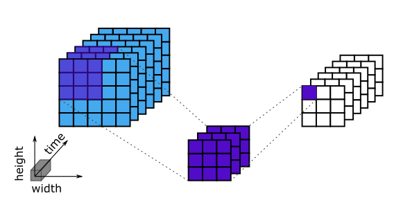
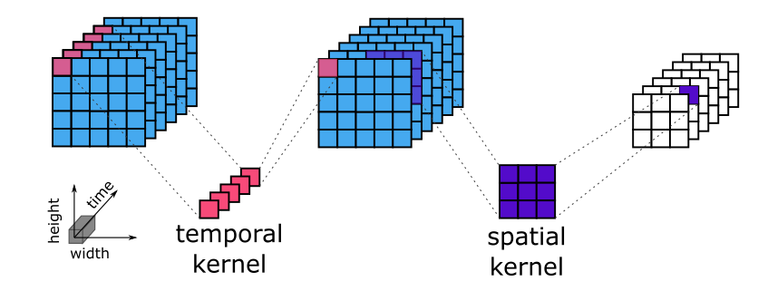
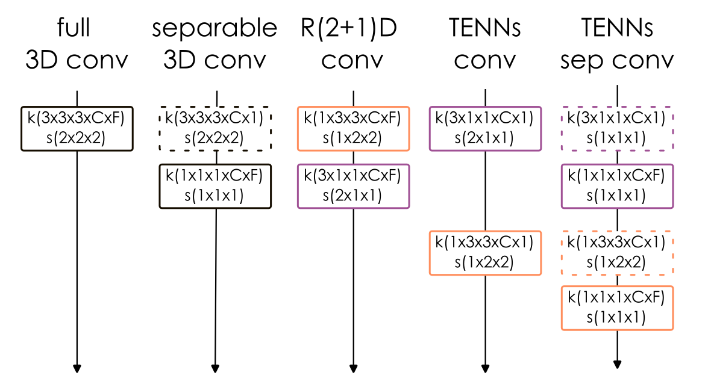
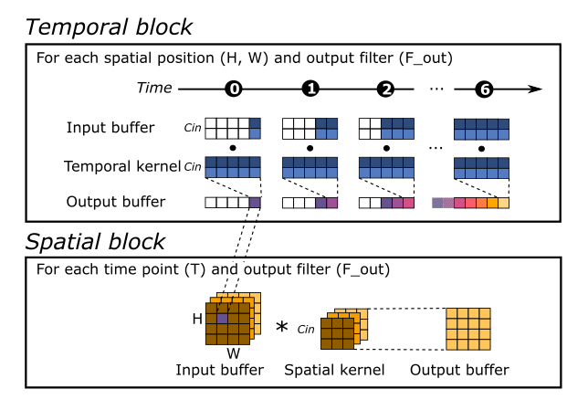

<!DOCTYPE html>
<html class="writer-html5" lang="en" data-content_root="../../">
<head>
  <meta charset="utf-8" /><meta name="viewport" content="width=device-width, initial-scale=1" />

  <meta name="viewport" content="width=device-width, initial-scale=1.0" />
  <title>Gesture recognition with spatiotemporal models &mdash; Akida Examples  documentation</title>
      <link rel="stylesheet" type="text/css" href="../../_static/pygments.css?v=b86133f3" />
      <link rel="stylesheet" type="text/css" href="../../_static/css/theme.css?v=e59714d7" />
      <link rel="stylesheet" type="text/css" href="../../_static/sg_gallery.css?v=d2d258e8" />
      <link rel="stylesheet" type="text/css" href="../../_static/sg_gallery-binder.css?v=f4aeca0c" />
      <link rel="stylesheet" type="text/css" href="../../_static/sg_gallery-dataframe.css?v=2082cf3c" />
      <link rel="stylesheet" type="text/css" href="../../_static/sg_gallery-rendered-html.css?v=1277b6f3" />
      <link rel="stylesheet" type="text/css" href="../../_static/sphinx-design.min.css?v=95c83b7e" />
      <link rel="stylesheet" type="text/css" href="../../_static/custom.css?v=c4c4e161" />

  
    <link rel="shortcut icon" href="../../_static/favicon.ico"/>
      <script src="../../_static/jquery.js?v=5d32c60e"></script>
      <script src="../../_static/_sphinx_javascript_frameworks_compat.js?v=2cd50e6c"></script>
      <script src="../../_static/documentation_options.js?v=5929fcd5"></script>
      <script src="../../_static/doctools.js?v=9bcbadda"></script>
      <script src="../../_static/sphinx_highlight.js?v=dc90522c"></script>
      <script src="../../_static/design-tabs.js?v=f930bc37"></script>
      <script src="../../_static/leadlander_tag.js?v=d65c0df8"></script>
    <script src="../../_static/js/theme.js"></script>
    <link rel="index" title="Index" href="../../genindex.html" />
    <link rel="search" title="Search" href="../../search.html" />
    <link rel="next" title="Efficient online eye tracking with a lightweight spatiotemporal network and event cameras" href="plot_1_eye_tracking_cvpr.html" />
    <link rel="prev" title="Tips to set Akida edge learning parameters" href="../edge/plot_2_edge_learning_parameters.html" /> 
</head>

<body class="wy-body-for-nav"> 
  <div class="wy-grid-for-nav">
    <nav data-toggle="wy-nav-shift" class="wy-nav-side">
      <div class="wy-side-scroll">
        <div class="wy-side-nav-search"  style="background: #000000" >

          
          
          <a href="../../index.html">
            
              
          </a>
<div role="search">
  <form id="rtd-search-form" class="wy-form" action="../../search.html" method="get">
    <input type="text" name="q" placeholder="Search docs" aria-label="Search docs" />
    <input type="hidden" name="check_keywords" value="yes" />
    <input type="hidden" name="area" value="default" />
  </form>
</div>
        </div><div class="wy-menu wy-menu-vertical" data-spy="affix" role="navigation" aria-label="Navigation menu">
              <ul class="current">
<li class="toctree-l1"><a class="reference internal" href="../../index.html">Overview</a></li>
<li class="toctree-l1"><a class="reference internal" href="../../installation.html">Installation</a><ul>
<li class="toctree-l2"><a class="reference internal" href="../../installation.html#supported-configurations">Supported configurations</a></li>
<li class="toctree-l2"><a class="reference internal" href="../../installation.html#quick-installation">Quick installation</a></li>
<li class="toctree-l2"><a class="reference internal" href="../../installation.html#running-examples">Running examples</a></li>
</ul>
</li>
<li class="toctree-l1"><a class="reference internal" href="../../user_guide/user_guide.html">User guide</a><ul>
<li class="toctree-l2"><a class="reference internal" href="../../user_guide/akida.html">Akida user guide</a><ul>
<li class="toctree-l3"><a class="reference internal" href="../../user_guide/akida.html#overview">Overview</a></li>
<li class="toctree-l3"><a class="reference internal" href="../../user_guide/akida.html#programming-interface">Programming interface</a><ul>
<li class="toctree-l4"><a class="reference internal" href="../../user_guide/akida.html#the-akida-model">The Akida Model</a></li>
<li class="toctree-l4"><a class="reference internal" href="../../user_guide/akida.html#akida-layers">Akida layers</a></li>
</ul>
</li>
<li class="toctree-l3"><a class="reference internal" href="../../user_guide/akida.html#model-hardware-mapping">Model Hardware Mapping</a><ul>
<li class="toctree-l4"><a class="reference internal" href="../../user_guide/akida.html#devices">Devices</a></li>
<li class="toctree-l4"><a class="reference internal" href="../../user_guide/akida.html#model-mapping">Model mapping</a></li>
<li class="toctree-l4"><a class="reference internal" href="../../user_guide/akida.html#advanced-mapping-details-and-hardware-devices-usage">Advanced Mapping Details and Hardware Devices Usage</a></li>
<li class="toctree-l4"><a class="reference internal" href="../../user_guide/akida.html#performance-measurement">Performance measurement</a></li>
<li class="toctree-l4"><a class="reference internal" href="../../user_guide/akida.html#command-line-interface-for-model-evaluation">Command-line interface for model evaluation</a></li>
</ul>
</li>
<li class="toctree-l3"><a class="reference internal" href="../../user_guide/akida.html#using-akida-edge-learning">Using Akida Edge learning</a><ul>
<li class="toctree-l4"><a class="reference internal" href="../../user_guide/akida.html#learning-constraints">Learning constraints</a></li>
<li class="toctree-l4"><a class="reference internal" href="../../user_guide/akida.html#compiling-a-layer">Compiling a layer</a></li>
</ul>
</li>
</ul>
</li>
<li class="toctree-l2"><a class="reference internal" href="../../user_guide/quantizeml.html">QuantizeML toolkit</a><ul>
<li class="toctree-l3"><a class="reference internal" href="../../user_guide/quantizeml.html#overview">Overview</a></li>
<li class="toctree-l3"><a class="reference internal" href="../../user_guide/quantizeml.html#the-fixedpoint-representation">The FixedPoint representation</a></li>
<li class="toctree-l3"><a class="reference internal" href="../../user_guide/quantizeml.html#quantization-flow">Quantization flow</a><ul>
<li class="toctree-l4"><a class="reference internal" href="../../user_guide/quantizeml.html#compatibility-constraints">Compatibility constraints</a></li>
<li class="toctree-l4"><a class="reference internal" href="../../user_guide/quantizeml.html#model-loading">Model loading</a></li>
</ul>
</li>
<li class="toctree-l3"><a class="reference internal" href="../../user_guide/quantizeml.html#command-line-interface">Command line interface</a><ul>
<li class="toctree-l4"><a class="reference internal" href="../../user_guide/quantizeml.html#quantize-cli">quantize CLI</a></li>
<li class="toctree-l4"><a class="reference internal" href="../../user_guide/quantizeml.html#config-cli">config CLI</a></li>
<li class="toctree-l4"><a class="reference internal" href="../../user_guide/quantizeml.html#check-cli">check CLI</a></li>
<li class="toctree-l4"><a class="reference internal" href="../../user_guide/quantizeml.html#insert-rescaling-cli">insert_rescaling CLI</a></li>
</ul>
</li>
<li class="toctree-l3"><a class="reference internal" href="../../user_guide/quantizeml.html#supported-layer-types">Supported layer types</a><ul>
<li class="toctree-l4"><a class="reference internal" href="../../user_guide/quantizeml.html#keras-support">Keras support</a></li>
<li class="toctree-l4"><a class="reference internal" href="../../user_guide/quantizeml.html#onnx-support">ONNX support</a></li>
</ul>
</li>
<li class="toctree-l3"><a class="reference internal" href="../../user_guide/quantizeml.html#analysis-module">Analysis module</a><ul>
<li class="toctree-l4"><a class="reference internal" href="../../user_guide/quantizeml.html#kernel-distribution">Kernel distribution</a></li>
<li class="toctree-l4"><a class="reference internal" href="../../user_guide/quantizeml.html#quantization-error">Quantization error</a></li>
<li class="toctree-l4"><a class="reference internal" href="../../user_guide/quantizeml.html#metrics">Metrics</a></li>
<li class="toctree-l4"><a class="reference internal" href="../../user_guide/quantizeml.html#command-line">Command line</a></li>
</ul>
</li>
</ul>
</li>
<li class="toctree-l2"><a class="reference internal" href="../../user_guide/cnn2snn.html">CNN2SNN toolkit</a><ul>
<li class="toctree-l3"><a class="reference internal" href="../../user_guide/cnn2snn.html#overview">Overview</a></li>
<li class="toctree-l3"><a class="reference internal" href="../../user_guide/cnn2snn.html#conversion-flow">Conversion flow</a><ul>
<li class="toctree-l4"><a class="reference internal" href="../../user_guide/cnn2snn.html#conversion-compatibility">Conversion compatibility</a></li>
<li class="toctree-l4"><a class="reference internal" href="../../user_guide/cnn2snn.html#command-line-interface">Command-line interface</a></li>
</ul>
</li>
<li class="toctree-l3"><a class="reference internal" href="../../user_guide/cnn2snn.html#handling-akida-1-0-and-akida-2-0-specificities">Handling Akida 1.0 and Akida 2.0 specificities</a></li>
</ul>
</li>
<li class="toctree-l2"><a class="reference internal" href="../../user_guide/akida_models.html">Akida models zoo</a><ul>
<li class="toctree-l3"><a class="reference internal" href="../../user_guide/akida_models.html#overview">Overview</a></li>
<li class="toctree-l3"><a class="reference internal" href="../../user_guide/akida_models.html#command-line-interface-for-model-creation">Command-line interface for model creation</a></li>
<li class="toctree-l3"><a class="reference internal" href="../../user_guide/akida_models.html#command-line-interface-for-model-training">Command-line interface for model training</a><ul>
<li class="toctree-l4"><a class="reference internal" href="../../user_guide/akida_models.html#kws-training">KWS training</a></li>
<li class="toctree-l4"><a class="reference internal" href="../../user_guide/akida_models.html#akidanet-training">AkidaNet training</a></li>
</ul>
</li>
<li class="toctree-l3"><a class="reference internal" href="../../user_guide/akida_models.html#command-line-interface-for-model-evaluation">Command-line interface for model evaluation</a></li>
<li class="toctree-l3"><a class="reference internal" href="../../user_guide/akida_models.html#command-line-interface-to-display-summary">Command-line interface to display summary</a></li>
<li class="toctree-l3"><a class="reference internal" href="../../user_guide/akida_models.html#command-line-interface-to-display-sparsity">Command-line interface to display sparsity</a></li>
<li class="toctree-l3"><a class="reference internal" href="../../user_guide/akida_models.html#id1">Layer Blocks</a></li>
<li class="toctree-l3"><a class="reference internal" href="../../user_guide/akida_models.html#handling-akida-1-0-and-akida-2-0-specificities">Handling Akida 1.0 and Akida 2.0 specificities</a></li>
</ul>
</li>
<li class="toctree-l2"><a class="reference internal" href="../../user_guide/engine.html">Akida Engine</a><ul>
<li class="toctree-l3"><a class="reference internal" href="../../user_guide/engine.html#overview">Overview</a></li>
<li class="toctree-l3"><a class="reference internal" href="../../user_guide/engine.html#engine-directory-structure">Engine directory structure</a></li>
<li class="toctree-l3"><a class="reference internal" href="../../user_guide/engine.html#engine-api-overview">Engine API overview</a><ul>
<li class="toctree-l4"><a class="reference internal" href="../../user_guide/engine.html#hardwaredriver">HardwareDriver</a></li>
<li class="toctree-l4"><a class="reference internal" href="../../user_guide/engine.html#hardwaredevice">HardwareDevice</a></li>
<li class="toctree-l4"><a class="reference internal" href="../../user_guide/engine.html#dense">Dense</a></li>
<li class="toctree-l4"><a class="reference internal" href="../../user_guide/engine.html#shape">Shape</a></li>
<li class="toctree-l4"><a class="reference internal" href="../../user_guide/engine.html#hwversion">HwVersion</a></li>
<li class="toctree-l4"><a class="reference internal" href="../../user_guide/engine.html#sparse-and-input-conversion-functions">Sparse and Input conversion functions</a></li>
<li class="toctree-l4"><a class="reference internal" href="../../user_guide/engine.html#other-headers-in-the-api">Other headers in the API</a></li>
</ul>
</li>
</ul>
</li>
</ul>
</li>
<li class="toctree-l1"><a class="reference internal" href="../../api_reference/api_reference.html">API reference</a><ul>
<li class="toctree-l2"><a class="reference internal" href="../../api_reference/akida_apis.html">Akida runtime</a><ul>
<li class="toctree-l3"><a class="reference internal" href="../../api_reference/akida_apis.html#akida.__version__"><code class="docutils literal notranslate"><span class="pre">__version__</span></code></a></li>
<li class="toctree-l3"><a class="reference internal" href="../../api_reference/akida_apis.html#model">Model</a><ul>
<li class="toctree-l4"><a class="reference internal" href="../../api_reference/akida_apis.html#akida.Model"><code class="docutils literal notranslate"><span class="pre">Model</span></code></a></li>
</ul>
</li>
<li class="toctree-l3"><a class="reference internal" href="../../api_reference/akida_apis.html#akida-layers">Akida layers</a><ul>
<li class="toctree-l4"><a class="reference internal" href="../../api_reference/akida_apis.html#layer-api">Layer API</a></li>
<li class="toctree-l4"><a class="reference internal" href="../../api_reference/akida_apis.html#common-layer">Common layer</a></li>
<li class="toctree-l4"><a class="reference internal" href="../../api_reference/akida_apis.html#akida-v1-layers">Akida V1 layers</a></li>
<li class="toctree-l4"><a class="reference internal" href="../../api_reference/akida_apis.html#akida-v2-layers">Akida V2 layers</a></li>
</ul>
</li>
<li class="toctree-l3"><a class="reference internal" href="../../api_reference/akida_apis.html#layer-parameters">Layer parameters</a><ul>
<li class="toctree-l4"><a class="reference internal" href="../../api_reference/akida_apis.html#layertype">LayerType</a></li>
<li class="toctree-l4"><a class="reference internal" href="../../api_reference/akida_apis.html#activationtype">ActivationType</a></li>
<li class="toctree-l4"><a class="reference internal" href="../../api_reference/akida_apis.html#padding">Padding</a></li>
<li class="toctree-l4"><a class="reference internal" href="../../api_reference/akida_apis.html#pooltype">PoolType</a></li>
</ul>
</li>
<li class="toctree-l3"><a class="reference internal" href="../../api_reference/akida_apis.html#optimizers">Optimizers</a><ul>
<li class="toctree-l4"><a class="reference internal" href="../../api_reference/akida_apis.html#akida.core.Optimizer"><code class="docutils literal notranslate"><span class="pre">Optimizer</span></code></a></li>
<li class="toctree-l4"><a class="reference internal" href="../../api_reference/akida_apis.html#akida.AkidaUnsupervised"><code class="docutils literal notranslate"><span class="pre">AkidaUnsupervised</span></code></a></li>
</ul>
</li>
<li class="toctree-l3"><a class="reference internal" href="../../api_reference/akida_apis.html#sequence">Sequence</a><ul>
<li class="toctree-l4"><a class="reference internal" href="../../api_reference/akida_apis.html#id1">Sequence</a></li>
<li class="toctree-l4"><a class="reference internal" href="../../api_reference/akida_apis.html#backendtype">BackendType</a></li>
<li class="toctree-l4"><a class="reference internal" href="../../api_reference/akida_apis.html#pass">Pass</a></li>
</ul>
</li>
<li class="toctree-l3"><a class="reference internal" href="../../api_reference/akida_apis.html#device">Device</a><ul>
<li class="toctree-l4"><a class="reference internal" href="../../api_reference/akida_apis.html#id2">Device</a></li>
<li class="toctree-l4"><a class="reference internal" href="../../api_reference/akida_apis.html#hwversion">HwVersion</a></li>
</ul>
</li>
<li class="toctree-l3"><a class="reference internal" href="../../api_reference/akida_apis.html#hwdevice">HWDevice</a><ul>
<li class="toctree-l4"><a class="reference internal" href="../../api_reference/akida_apis.html#id3">HWDevice</a></li>
<li class="toctree-l4"><a class="reference internal" href="../../api_reference/akida_apis.html#socdriver">SocDriver</a></li>
<li class="toctree-l4"><a class="reference internal" href="../../api_reference/akida_apis.html#clockmode">ClockMode</a></li>
</ul>
</li>
<li class="toctree-l3"><a class="reference internal" href="../../api_reference/akida_apis.html#powermeter">PowerMeter</a><ul>
<li class="toctree-l4"><a class="reference internal" href="../../api_reference/akida_apis.html#akida.PowerMeter"><code class="docutils literal notranslate"><span class="pre">PowerMeter</span></code></a></li>
<li class="toctree-l4"><a class="reference internal" href="../../api_reference/akida_apis.html#akida.PowerEvent"><code class="docutils literal notranslate"><span class="pre">PowerEvent</span></code></a></li>
</ul>
</li>
<li class="toctree-l3"><a class="reference internal" href="../../api_reference/akida_apis.html#np">NP</a><ul>
<li class="toctree-l4"><a class="reference internal" href="../../api_reference/akida_apis.html#akida.NP.Mesh"><code class="docutils literal notranslate"><span class="pre">Mesh</span></code></a></li>
<li class="toctree-l4"><a class="reference internal" href="../../api_reference/akida_apis.html#akida.NP.Info"><code class="docutils literal notranslate"><span class="pre">Info</span></code></a></li>
<li class="toctree-l4"><a class="reference internal" href="../../api_reference/akida_apis.html#akida.NP.Ident"><code class="docutils literal notranslate"><span class="pre">Ident</span></code></a></li>
<li class="toctree-l4"><a class="reference internal" href="../../api_reference/akida_apis.html#akida.NP.NpSpace"><code class="docutils literal notranslate"><span class="pre">NpSpace</span></code></a></li>
<li class="toctree-l4"><a class="reference internal" href="../../api_reference/akida_apis.html#akida.NP.Type"><code class="docutils literal notranslate"><span class="pre">Type</span></code></a></li>
<li class="toctree-l4"><a class="reference internal" href="../../api_reference/akida_apis.html#akida.NP.MemoryInfo"><code class="docutils literal notranslate"><span class="pre">MemoryInfo</span></code></a></li>
<li class="toctree-l4"><a class="reference internal" href="../../api_reference/akida_apis.html#akida.NP.Component"><code class="docutils literal notranslate"><span class="pre">Component</span></code></a></li>
<li class="toctree-l4"><a class="reference internal" href="../../api_reference/akida_apis.html#akida.NP.SramSize"><code class="docutils literal notranslate"><span class="pre">SramSize</span></code></a></li>
</ul>
</li>
<li class="toctree-l3"><a class="reference internal" href="../../api_reference/akida_apis.html#mapping">Mapping</a><ul>
<li class="toctree-l4"><a class="reference internal" href="../../api_reference/akida_apis.html#akida.MapMode"><code class="docutils literal notranslate"><span class="pre">MapMode</span></code></a></li>
<li class="toctree-l4"><a class="reference internal" href="../../api_reference/akida_apis.html#akida.MapConstraints"><code class="docutils literal notranslate"><span class="pre">MapConstraints</span></code></a></li>
</ul>
</li>
</ul>
</li>
<li class="toctree-l2"><a class="reference internal" href="../../api_reference/cnn2snn_apis.html">CNN2SNN</a><ul>
<li class="toctree-l3"><a class="reference internal" href="../../api_reference/cnn2snn_apis.html#akida-version">Akida version</a><ul>
<li class="toctree-l4"><a class="reference internal" href="../../api_reference/cnn2snn_apis.html#cnn2snn.AkidaVersion"><code class="docutils literal notranslate"><span class="pre">AkidaVersion</span></code></a></li>
<li class="toctree-l4"><a class="reference internal" href="../../api_reference/cnn2snn_apis.html#cnn2snn.get_akida_version"><code class="docutils literal notranslate"><span class="pre">get_akida_version()</span></code></a></li>
<li class="toctree-l4"><a class="reference internal" href="../../api_reference/cnn2snn_apis.html#cnn2snn.set_akida_version"><code class="docutils literal notranslate"><span class="pre">set_akida_version()</span></code></a></li>
</ul>
</li>
<li class="toctree-l3"><a class="reference internal" href="../../api_reference/cnn2snn_apis.html#conversion">Conversion</a><ul>
<li class="toctree-l4"><a class="reference internal" href="../../api_reference/cnn2snn_apis.html#cnn2snn.convert"><code class="docutils literal notranslate"><span class="pre">convert()</span></code></a></li>
<li class="toctree-l4"><a class="reference internal" href="../../api_reference/cnn2snn_apis.html#cnn2snn.check_model_compatibility"><code class="docutils literal notranslate"><span class="pre">check_model_compatibility()</span></code></a></li>
</ul>
</li>
</ul>
</li>
<li class="toctree-l2"><a class="reference internal" href="../../api_reference/quantizeml_apis.html">QuantizeML</a><ul>
<li class="toctree-l3"><a class="reference internal" href="../../api_reference/quantizeml_apis.html#layers">Layers</a><ul>
<li class="toctree-l4"><a class="reference internal" href="../../api_reference/quantizeml_apis.html#reshaping">Reshaping</a></li>
<li class="toctree-l4"><a class="reference internal" href="../../api_reference/quantizeml_apis.html#activations">Activations</a></li>
<li class="toctree-l4"><a class="reference internal" href="../../api_reference/quantizeml_apis.html#convolution">Convolution</a></li>
<li class="toctree-l4"><a class="reference internal" href="../../api_reference/quantizeml_apis.html#depthwise-convolution">Depthwise convolution</a></li>
<li class="toctree-l4"><a class="reference internal" href="../../api_reference/quantizeml_apis.html#separable-convolution">Separable convolution</a></li>
<li class="toctree-l4"><a class="reference internal" href="../../api_reference/quantizeml_apis.html#temporal-convolution">Temporal convolution</a></li>
<li class="toctree-l4"><a class="reference internal" href="../../api_reference/quantizeml_apis.html#dense">Dense</a></li>
<li class="toctree-l4"><a class="reference internal" href="../../api_reference/quantizeml_apis.html#skip-connection">Skip connection</a></li>
<li class="toctree-l4"><a class="reference internal" href="../../api_reference/quantizeml_apis.html#pooling">Pooling</a></li>
<li class="toctree-l4"><a class="reference internal" href="../../api_reference/quantizeml_apis.html#rescaling">Rescaling</a></li>
<li class="toctree-l4"><a class="reference internal" href="../../api_reference/quantizeml_apis.html#dropout">Dropout</a></li>
<li class="toctree-l4"><a class="reference internal" href="../../api_reference/quantizeml_apis.html#quantizers">Quantizers</a></li>
<li class="toctree-l4"><a class="reference internal" href="../../api_reference/quantizeml_apis.html#calibration">Calibration</a></li>
<li class="toctree-l4"><a class="reference internal" href="../../api_reference/quantizeml_apis.html#recording">Recording</a></li>
</ul>
</li>
<li class="toctree-l3"><a class="reference internal" href="../../api_reference/quantizeml_apis.html#models">Models</a><ul>
<li class="toctree-l4"><a class="reference internal" href="../../api_reference/quantizeml_apis.html#quantization">Quantization</a></li>
<li class="toctree-l4"><a class="reference internal" href="../../api_reference/quantizeml_apis.html#quantization-parameters">Quantization parameters</a></li>
<li class="toctree-l4"><a class="reference internal" href="../../api_reference/quantizeml_apis.html#id1">Calibration</a></li>
<li class="toctree-l4"><a class="reference internal" href="../../api_reference/quantizeml_apis.html#utils">Utils</a></li>
<li class="toctree-l4"><a class="reference internal" href="../../api_reference/quantizeml_apis.html#reset-buffers">Reset buffers</a></li>
</ul>
</li>
<li class="toctree-l3"><a class="reference internal" href="../../api_reference/quantizeml_apis.html#tensors">Tensors</a><ul>
<li class="toctree-l4"><a class="reference internal" href="../../api_reference/quantizeml_apis.html#qtensor">QTensor</a></li>
<li class="toctree-l4"><a class="reference internal" href="../../api_reference/quantizeml_apis.html#fixedpoint">FixedPoint</a></li>
<li class="toctree-l4"><a class="reference internal" href="../../api_reference/quantizeml_apis.html#qfloat">QFloat</a></li>
</ul>
</li>
<li class="toctree-l3"><a class="reference internal" href="../../api_reference/quantizeml_apis.html#onnx-support">ONNX support</a><ul>
<li class="toctree-l4"><a class="reference internal" href="../../api_reference/quantizeml_apis.html#id2">Layers</a></li>
<li class="toctree-l4"><a class="reference internal" href="../../api_reference/quantizeml_apis.html#custom-patterns">Custom patterns</a></li>
</ul>
</li>
<li class="toctree-l3"><a class="reference internal" href="../../api_reference/quantizeml_apis.html#model-i-o">Model I/O</a><ul>
<li class="toctree-l4"><a class="reference internal" href="../../api_reference/quantizeml_apis.html#quantizeml.load_model"><code class="docutils literal notranslate"><span class="pre">load_model()</span></code></a></li>
<li class="toctree-l4"><a class="reference internal" href="../../api_reference/quantizeml_apis.html#quantizeml.save_model"><code class="docutils literal notranslate"><span class="pre">save_model()</span></code></a></li>
</ul>
</li>
<li class="toctree-l3"><a class="reference internal" href="../../api_reference/quantizeml_apis.html#analysis">Analysis</a><ul>
<li class="toctree-l4"><a class="reference internal" href="../../api_reference/quantizeml_apis.html#kernel-distribution">Kernel distribution</a></li>
<li class="toctree-l4"><a class="reference internal" href="../../api_reference/quantizeml_apis.html#quantization-error">Quantization error</a></li>
<li class="toctree-l4"><a class="reference internal" href="../../api_reference/quantizeml_apis.html#metrics">Metrics</a></li>
</ul>
</li>
</ul>
</li>
<li class="toctree-l2"><a class="reference internal" href="../../api_reference/akida_models_apis.html">Akida models</a><ul>
<li class="toctree-l3"><a class="reference internal" href="../../api_reference/akida_models_apis.html#layer-blocks">Layer blocks</a><ul>
<li class="toctree-l4"><a class="reference internal" href="../../api_reference/akida_models_apis.html#cnn-blocks">CNN blocks</a></li>
<li class="toctree-l4"><a class="reference internal" href="../../api_reference/akida_models_apis.html#transposed-blocks">Transposed blocks</a></li>
<li class="toctree-l4"><a class="reference internal" href="../../api_reference/akida_models_apis.html#detection-block">Detection block</a></li>
<li class="toctree-l4"><a class="reference internal" href="../../api_reference/akida_models_apis.html#spatiotemporal-blocks">Spatiotemporal blocks</a></li>
</ul>
</li>
<li class="toctree-l3"><a class="reference internal" href="../../api_reference/akida_models_apis.html#helpers">Helpers</a><ul>
<li class="toctree-l4"><a class="reference internal" href="../../api_reference/akida_models_apis.html#gamma-constraint">Gamma constraint</a></li>
<li class="toctree-l4"><a class="reference internal" href="../../api_reference/akida_models_apis.html#unfusing-separableconvolutional">Unfusing SeparableConvolutional</a></li>
<li class="toctree-l4"><a class="reference internal" href="../../api_reference/akida_models_apis.html#extract-samples">Extract samples</a></li>
</ul>
</li>
<li class="toctree-l3"><a class="reference internal" href="../../api_reference/akida_models_apis.html#knowledge-distillation">Knowledge distillation</a><ul>
<li class="toctree-l4"><a class="reference internal" href="../../api_reference/akida_models_apis.html#akida_models.distiller.Distiller"><code class="docutils literal notranslate"><span class="pre">Distiller</span></code></a></li>
<li class="toctree-l4"><a class="reference internal" href="../../api_reference/akida_models_apis.html#akida_models.distiller.KLDistillationLoss"><code class="docutils literal notranslate"><span class="pre">KLDistillationLoss()</span></code></a></li>
</ul>
</li>
<li class="toctree-l3"><a class="reference internal" href="../../api_reference/akida_models_apis.html#sparsity">Sparsity</a><ul>
<li class="toctree-l4"><a class="reference internal" href="../../api_reference/akida_models_apis.html#akida_models.sparsity.compute_sparsity"><code class="docutils literal notranslate"><span class="pre">compute_sparsity()</span></code></a></li>
</ul>
</li>
<li class="toctree-l3"><a class="reference internal" href="../../api_reference/akida_models_apis.html#model-i-o">Model I/O</a><ul>
<li class="toctree-l4"><a class="reference internal" href="../../api_reference/akida_models_apis.html#akida_models.model_io.load_model"><code class="docutils literal notranslate"><span class="pre">load_model()</span></code></a></li>
<li class="toctree-l4"><a class="reference internal" href="../../api_reference/akida_models_apis.html#akida_models.model_io.load_weights"><code class="docutils literal notranslate"><span class="pre">load_weights()</span></code></a></li>
<li class="toctree-l4"><a class="reference internal" href="../../api_reference/akida_models_apis.html#akida_models.model_io.save_weights"><code class="docutils literal notranslate"><span class="pre">save_weights()</span></code></a></li>
<li class="toctree-l4"><a class="reference internal" href="../../api_reference/akida_models_apis.html#akida_models.model_io.get_model_path"><code class="docutils literal notranslate"><span class="pre">get_model_path()</span></code></a></li>
</ul>
</li>
<li class="toctree-l3"><a class="reference internal" href="../../api_reference/akida_models_apis.html#utils">Utils</a><ul>
<li class="toctree-l4"><a class="reference internal" href="../../api_reference/akida_models_apis.html#akida_models.utils.fetch_file"><code class="docutils literal notranslate"><span class="pre">fetch_file()</span></code></a></li>
<li class="toctree-l4"><a class="reference internal" href="../../api_reference/akida_models_apis.html#akida_models.utils.get_tensorboard_callback"><code class="docutils literal notranslate"><span class="pre">get_tensorboard_callback()</span></code></a></li>
<li class="toctree-l4"><a class="reference internal" href="../../api_reference/akida_models_apis.html#akida_models.utils.get_params_by_version"><code class="docutils literal notranslate"><span class="pre">get_params_by_version()</span></code></a></li>
</ul>
</li>
<li class="toctree-l3"><a class="reference internal" href="../../api_reference/akida_models_apis.html#model-zoo">Model zoo</a><ul>
<li class="toctree-l4"><a class="reference internal" href="../../api_reference/akida_models_apis.html#akidanet">AkidaNet</a></li>
<li class="toctree-l4"><a class="reference internal" href="../../api_reference/akida_models_apis.html#mobilenet">Mobilenet</a></li>
<li class="toctree-l4"><a class="reference internal" href="../../api_reference/akida_models_apis.html#ds-cnn">DS-CNN</a></li>
<li class="toctree-l4"><a class="reference internal" href="../../api_reference/akida_models_apis.html#vgg">VGG</a></li>
<li class="toctree-l4"><a class="reference internal" href="../../api_reference/akida_models_apis.html#yolo">YOLO</a></li>
<li class="toctree-l4"><a class="reference internal" href="../../api_reference/akida_models_apis.html#pointnet">PointNet++</a></li>
<li class="toctree-l4"><a class="reference internal" href="../../api_reference/akida_models_apis.html#gxnor">GXNOR</a></li>
<li class="toctree-l4"><a class="reference internal" href="../../api_reference/akida_models_apis.html#centernet">CenterNet</a></li>
<li class="toctree-l4"><a class="reference internal" href="../../api_reference/akida_models_apis.html#akidaunet">AkidaUNet</a></li>
<li class="toctree-l4"><a class="reference internal" href="../../api_reference/akida_models_apis.html#spatiotemporal-tenns">Spatiotemporal TENNs</a></li>
</ul>
</li>
</ul>
</li>
<li class="toctree-l2"><a class="reference internal" href="../../api_reference/tenns_modules_apis.html">TENNs modules</a><ul>
<li class="toctree-l3"><a class="reference internal" href="../../api_reference/tenns_modules_apis.html#spatiotemporal-blocks">Spatiotemporal blocks</a><ul>
<li class="toctree-l4"><a class="reference internal" href="../../api_reference/tenns_modules_apis.html#tenns_modules.SpatialBlock"><code class="docutils literal notranslate"><span class="pre">SpatialBlock</span></code></a></li>
<li class="toctree-l4"><a class="reference internal" href="../../api_reference/tenns_modules_apis.html#tenns_modules.TemporalBlock"><code class="docutils literal notranslate"><span class="pre">TemporalBlock</span></code></a></li>
<li class="toctree-l4"><a class="reference internal" href="../../api_reference/tenns_modules_apis.html#tenns_modules.SpatioTemporalBlock"><code class="docutils literal notranslate"><span class="pre">SpatioTemporalBlock</span></code></a></li>
</ul>
</li>
<li class="toctree-l3"><a class="reference internal" href="../../api_reference/tenns_modules_apis.html#export">Export</a><ul>
<li class="toctree-l4"><a class="reference internal" href="../../api_reference/tenns_modules_apis.html#tenns_modules.export_to_onnx"><code class="docutils literal notranslate"><span class="pre">export_to_onnx()</span></code></a></li>
</ul>
</li>
</ul>
</li>
</ul>
</li>
<li class="toctree-l1 current"><a class="reference internal" href="../index.html">Examples</a><ul class="current">
<li class="toctree-l2"><a class="reference internal" href="../index.html#general-examples">General examples</a><ul>
<li class="toctree-l3"><a class="reference internal" href="../general/plot_0_global_workflow.html">Global Akida workflow</a><ul>
<li class="toctree-l4"><a class="reference internal" href="../general/plot_0_global_workflow.html#create-and-train">1. Create and train</a></li>
<li class="toctree-l4"><a class="reference internal" href="../general/plot_0_global_workflow.html#quantize">2. Quantize</a></li>
<li class="toctree-l4"><a class="reference internal" href="../general/plot_0_global_workflow.html#convert">3. Convert</a></li>
</ul>
</li>
<li class="toctree-l3"><a class="reference internal" href="../general/plot_1_akidanet_imagenet.html">AkidaNet/ImageNet inference</a><ul>
<li class="toctree-l4"><a class="reference internal" href="../general/plot_1_akidanet_imagenet.html#dataset-preparation">1. Dataset preparation</a></li>
<li class="toctree-l4"><a class="reference internal" href="../general/plot_1_akidanet_imagenet.html#pretrained-quantized-model">2. Pretrained quantized model</a></li>
<li class="toctree-l4"><a class="reference internal" href="../general/plot_1_akidanet_imagenet.html#conversion-to-akida">3. Conversion to Akida</a></li>
<li class="toctree-l4"><a class="reference internal" href="../general/plot_1_akidanet_imagenet.html#hardware-mapping-and-performance">4. Hardware mapping and performance</a></li>
</ul>
</li>
<li class="toctree-l3"><a class="reference internal" href="../general/plot_2_ds_cnn_kws.html">DS-CNN/KWS inference</a><ul>
<li class="toctree-l4"><a class="reference internal" href="../general/plot_2_ds_cnn_kws.html#load-the-preprocessed-dataset">1. Load the preprocessed dataset</a></li>
<li class="toctree-l4"><a class="reference internal" href="../general/plot_2_ds_cnn_kws.html#load-a-pre-trained-native-keras-model">2. Load a pre-trained native Keras model</a></li>
<li class="toctree-l4"><a class="reference internal" href="../general/plot_2_ds_cnn_kws.html#load-a-pre-trained-quantized-keras-model">3. Load a pre-trained quantized Keras model</a></li>
<li class="toctree-l4"><a class="reference internal" href="../general/plot_2_ds_cnn_kws.html#conversion-to-akida">4. Conversion to Akida</a></li>
<li class="toctree-l4"><a class="reference internal" href="../general/plot_2_ds_cnn_kws.html#confusion-matrix">5. Confusion matrix</a></li>
</ul>
</li>
<li class="toctree-l3"><a class="reference internal" href="../general/plot_3_regression.html">Age estimation (regression) example</a><ul>
<li class="toctree-l4"><a class="reference internal" href="../general/plot_3_regression.html#load-the-utkface-dataset">1. Load the UTKFace Dataset</a></li>
<li class="toctree-l4"><a class="reference internal" href="../general/plot_3_regression.html#load-a-pre-trained-native-keras-model">2. Load a pre-trained native Keras model</a></li>
<li class="toctree-l4"><a class="reference internal" href="../general/plot_3_regression.html#load-a-pre-trained-quantized-keras-model">3. Load a pre-trained quantized Keras model</a></li>
<li class="toctree-l4"><a class="reference internal" href="../general/plot_3_regression.html#conversion-to-akida">4. Conversion to Akida</a></li>
<li class="toctree-l4"><a class="reference internal" href="../general/plot_3_regression.html#estimate-age-on-a-single-image">5. Estimate age on a single image</a></li>
</ul>
</li>
<li class="toctree-l3"><a class="reference internal" href="../general/plot_4_transfer_learning.html">Transfer learning with AkidaNet for PlantVillage</a><ul>
<li class="toctree-l4"><a class="reference internal" href="../general/plot_4_transfer_learning.html#transfer-learning-process">Transfer learning process</a></li>
<li class="toctree-l4"><a class="reference internal" href="../general/plot_4_transfer_learning.html#dataset-preparation">1. Dataset preparation</a></li>
<li class="toctree-l4"><a class="reference internal" href="../general/plot_4_transfer_learning.html#get-a-trained-akidanet-base-model">2. Get a trained AkidaNet base model</a></li>
<li class="toctree-l4"><a class="reference internal" href="../general/plot_4_transfer_learning.html#add-a-classification-head-to-the-model">3. Add a classification head to the model</a></li>
<li class="toctree-l4"><a class="reference internal" href="../general/plot_4_transfer_learning.html#train-for-a-few-epochs">4. Train for a few epochs</a></li>
<li class="toctree-l4"><a class="reference internal" href="../general/plot_4_transfer_learning.html#quantize-the-model">5. Quantize the model</a></li>
<li class="toctree-l4"><a class="reference internal" href="../general/plot_4_transfer_learning.html#compute-accuracy">6. Compute accuracy</a></li>
</ul>
</li>
<li class="toctree-l3"><a class="reference internal" href="../general/plot_5_voc_yolo_detection.html">YOLO/PASCAL-VOC detection tutorial</a><ul>
<li class="toctree-l4"><a class="reference internal" href="../general/plot_5_voc_yolo_detection.html#introduction">1. Introduction</a></li>
<li class="toctree-l4"><a class="reference internal" href="../general/plot_5_voc_yolo_detection.html#preprocessing-tools">2. Preprocessing tools</a></li>
<li class="toctree-l4"><a class="reference internal" href="../general/plot_5_voc_yolo_detection.html#model-architecture">3. Model architecture</a></li>
<li class="toctree-l4"><a class="reference internal" href="../general/plot_5_voc_yolo_detection.html#training">4. Training</a></li>
<li class="toctree-l4"><a class="reference internal" href="../general/plot_5_voc_yolo_detection.html#performance">5. Performance</a></li>
<li class="toctree-l4"><a class="reference internal" href="../general/plot_5_voc_yolo_detection.html#conversion-to-akida">6. Conversion to Akida</a></li>
</ul>
</li>
<li class="toctree-l3"><a class="reference internal" href="../general/plot_6_segmentation.html">Segmentation tutorial</a><ul>
<li class="toctree-l4"><a class="reference internal" href="../general/plot_6_segmentation.html#load-the-dataset">1. Load the dataset</a></li>
<li class="toctree-l4"><a class="reference internal" href="../general/plot_6_segmentation.html#load-a-pre-trained-native-keras-model">2. Load a pre-trained native Keras model</a></li>
<li class="toctree-l4"><a class="reference internal" href="../general/plot_6_segmentation.html#load-a-pre-trained-quantized-keras-model">3. Load a pre-trained quantized Keras model</a></li>
<li class="toctree-l4"><a class="reference internal" href="../general/plot_6_segmentation.html#conversion-to-akida">4. Conversion to Akida</a></li>
<li class="toctree-l4"><a class="reference internal" href="../general/plot_6_segmentation.html#segment-a-single-image">5. Segment a single image</a></li>
</ul>
</li>
<li class="toctree-l3"><a class="reference internal" href="../general/plot_7_global_pytorch_workflow.html">PyTorch to Akida workflow</a><ul>
<li class="toctree-l4"><a class="reference internal" href="../general/plot_7_global_pytorch_workflow.html#create-and-train">1. Create and train</a></li>
<li class="toctree-l4"><a class="reference internal" href="../general/plot_7_global_pytorch_workflow.html#export">2. Export</a></li>
<li class="toctree-l4"><a class="reference internal" href="../general/plot_7_global_pytorch_workflow.html#quantize">3. Quantize</a></li>
<li class="toctree-l4"><a class="reference internal" href="../general/plot_7_global_pytorch_workflow.html#convert">4. Convert</a></li>
</ul>
</li>
</ul>
</li>
<li class="toctree-l2"><a class="reference internal" href="../index.html#quantization">Quantization</a><ul>
<li class="toctree-l3"><a class="reference internal" href="../quantization/plot_0_advanced_quantizeml.html">Advanced QuantizeML tutorial</a><ul>
<li class="toctree-l4"><a class="reference internal" href="../quantization/plot_0_advanced_quantizeml.html#defining-a-quantization-scheme">1. Defining a quantization scheme</a></li>
<li class="toctree-l4"><a class="reference internal" href="../quantization/plot_0_advanced_quantizeml.html#calibration">2. Calibration</a></li>
</ul>
</li>
<li class="toctree-l3"><a class="reference internal" href="../quantization/plot_1_upgrading_to_2.0.html">Upgrading to Akida 2.0</a><ul>
<li class="toctree-l4"><a class="reference internal" href="../quantization/plot_1_upgrading_to_2.0.html#workflow-differences">1. Workflow differences</a></li>
<li class="toctree-l4"><a class="reference internal" href="../quantization/plot_1_upgrading_to_2.0.html#models-architecture-differences">2. Models architecture differences</a></li>
<li class="toctree-l4"><a class="reference internal" href="../quantization/plot_1_upgrading_to_2.0.html#using-akidaversion">3. Using <code class="docutils literal notranslate"><span class="pre">AkidaVersion</span></code></a></li>
</ul>
</li>
<li class="toctree-l3"><a class="reference internal" href="../quantization/plot_2_off_the_shelf_quantization.html">Off-the-shelf models quantization</a><ul>
<li class="toctree-l4"><a class="reference internal" href="../quantization/plot_2_off_the_shelf_quantization.html#workflow-overview">1. Workflow overview</a></li>
<li class="toctree-l4"><a class="reference internal" href="../quantization/plot_2_off_the_shelf_quantization.html#data-preparation">2. Data preparation</a></li>
<li class="toctree-l4"><a class="reference internal" href="../quantization/plot_2_off_the_shelf_quantization.html#download-and-export">3. Download and export</a></li>
<li class="toctree-l4"><a class="reference internal" href="../quantization/plot_2_off_the_shelf_quantization.html#quantize">4. Quantize</a></li>
<li class="toctree-l4"><a class="reference internal" href="../quantization/plot_2_off_the_shelf_quantization.html#convert-to-akida">5. Convert to Akida</a></li>
</ul>
</li>
<li class="toctree-l3"><a class="reference internal" href="../quantization/plot_3_custom_patterns.html">Advanced ONNX models quantization</a><ul>
<li class="toctree-l4"><a class="reference internal" href="../quantization/plot_3_custom_patterns.html#get-model-and-data">1. Get model and data</a></li>
<li class="toctree-l4"><a class="reference internal" href="../quantization/plot_3_custom_patterns.html#quantize">2. Quantize</a></li>
<li class="toctree-l4"><a class="reference internal" href="../quantization/plot_3_custom_patterns.html#conversion">3. Conversion</a></li>
</ul>
</li>
</ul>
</li>
<li class="toctree-l2"><a class="reference internal" href="../index.html#edge-examples">Edge examples</a><ul>
<li class="toctree-l3"><a class="reference internal" href="../edge/plot_0_edge_learning_vision.html">Akida vision edge learning</a><ul>
<li class="toctree-l4"><a class="reference internal" href="../edge/plot_0_edge_learning_vision.html#dataset-preparation">1. Dataset preparation</a></li>
<li class="toctree-l4"><a class="reference internal" href="../edge/plot_0_edge_learning_vision.html#prepare-akida-model-for-learning">2. Prepare Akida model for learning</a></li>
<li class="toctree-l4"><a class="reference internal" href="../edge/plot_0_edge_learning_vision.html#edge-learning-with-akida">3. Edge learning with Akida</a></li>
</ul>
</li>
<li class="toctree-l3"><a class="reference internal" href="../edge/plot_1_edge_learning_kws.html">Akida edge learning for keyword spotting</a><ul>
<li class="toctree-l4"><a class="reference internal" href="../edge/plot_1_edge_learning_kws.html#edge-learning-process">1. Edge learning process</a></li>
<li class="toctree-l4"><a class="reference internal" href="../edge/plot_1_edge_learning_kws.html#dataset-preparation">2. Dataset preparation</a></li>
<li class="toctree-l4"><a class="reference internal" href="../edge/plot_1_edge_learning_kws.html#prepare-akida-model-for-learning">3. Prepare Akida model for learning</a></li>
<li class="toctree-l4"><a class="reference internal" href="../edge/plot_1_edge_learning_kws.html#learn-with-akida-using-the-training-set">4. Learn with Akida using the training set</a></li>
<li class="toctree-l4"><a class="reference internal" href="../edge/plot_1_edge_learning_kws.html#edge-learning">5. Edge learning</a></li>
</ul>
</li>
<li class="toctree-l3"><a class="reference internal" href="../edge/plot_2_edge_learning_parameters.html">Tips to set Akida edge learning parameters</a><ul>
<li class="toctree-l4"><a class="reference internal" href="../edge/plot_2_edge_learning_parameters.html#akida-learning-parameters">1. Akida learning parameters</a></li>
<li class="toctree-l4"><a class="reference internal" href="../edge/plot_2_edge_learning_parameters.html#create-akida-model">2. Create Akida model</a></li>
<li class="toctree-l4"><a class="reference internal" href="../edge/plot_2_edge_learning_parameters.html#estimate-the-required-number-of-weights-of-the-trainable-layer">3. Estimate the required number of weights of the trainable layer</a></li>
<li class="toctree-l4"><a class="reference internal" href="../edge/plot_2_edge_learning_parameters.html#estimate-the-number-of-neurons-per-class">4. Estimate the number of neurons per class</a></li>
</ul>
</li>
</ul>
</li>
<li class="toctree-l2 current"><a class="reference internal" href="../index.html#spatiotemporal-examples">Spatiotemporal examples</a><ul class="current">
<li class="toctree-l3 current"><a class="current reference internal" href="#">Gesture recognition with spatiotemporal models</a><ul>
<li class="toctree-l4"><a class="reference internal" href="#introduction-why-spatiotemporal-models">1. Introduction: why spatiotemporal models?</a></li>
<li class="toctree-l4"><a class="reference internal" href="#spatiotemporal-blocks-the-core-concept">2. Spatiotemporal blocks: the core concept</a></li>
<li class="toctree-l4"><a class="reference internal" href="#building-the-model-from-blocks-to-network">3. Building the model: from blocks to network</a></li>
<li class="toctree-l4"><a class="reference internal" href="#gesture-classification-in-videos">4. Gesture classification in videos</a></li>
<li class="toctree-l4"><a class="reference internal" href="#training-and-evaluating-the-model">5. Training and evaluating the model</a></li>
<li class="toctree-l4"><a class="reference internal" href="#streaming-inference-making-real-time-predictions">6. Streaming inference: making real-time predictions</a></li>
<li class="toctree-l4"><a class="reference internal" href="#visualizing-the-predictions-of-the-model-in-real-time">7. Visualizing the predictions of the model in real time</a></li>
<li class="toctree-l4"><a class="reference internal" href="#quantizing-the-model-and-convertion-to-akida">8. Quantizing the model and convertion to akida</a></li>
<li class="toctree-l4"><a class="reference internal" href="#final-thoughts-generalizing-the-approach">9. Final thoughts: generalizing the approach</a></li>
</ul>
</li>
<li class="toctree-l3"><a class="reference internal" href="plot_1_eye_tracking_cvpr.html">Efficient online eye tracking with a lightweight spatiotemporal network and event cameras</a><ul>
<li class="toctree-l4"><a class="reference internal" href="plot_1_eye_tracking_cvpr.html#introduction">1. Introduction</a></li>
<li class="toctree-l4"><a class="reference internal" href="plot_1_eye_tracking_cvpr.html#network-architecture">2. Network architecture</a></li>
<li class="toctree-l4"><a class="reference internal" href="plot_1_eye_tracking_cvpr.html#dataset-and-preprocessing">3. Dataset and preprocessing</a></li>
<li class="toctree-l4"><a class="reference internal" href="plot_1_eye_tracking_cvpr.html#model-training-evaluation">4. Model training &amp; evaluation</a></li>
<li class="toctree-l4"><a class="reference internal" href="plot_1_eye_tracking_cvpr.html#official-competition-results">5. Official competition results</a></li>
<li class="toctree-l4"><a class="reference internal" href="plot_1_eye_tracking_cvpr.html#ablation-studies-and-efficiency-optimization">6. Ablation studies and efficiency optimization</a></li>
<li class="toctree-l4"><a class="reference internal" href="plot_1_eye_tracking_cvpr.html#fifo-buffering-for-streaming-inference">7. FIFO buffering for streaming inference</a></li>
<li class="toctree-l4"><a class="reference internal" href="plot_1_eye_tracking_cvpr.html#quantization-and-conversion-to-akida">8. Quantization and conversion to Akida</a></li>
</ul>
</li>
</ul>
</li>
</ul>
</li>
<li class="toctree-l1"><a class="reference internal" href="../../model_zoo_performance.html">Model zoo performance</a><ul>
<li class="toctree-l2"><a class="reference internal" href="../../model_zoo_performance.html#akida-1-0-models">Akida 1.0 models</a><ul>
<li class="toctree-l3"><a class="reference internal" href="../../model_zoo_performance.html#image-icon-ref-image-domain"> Image domain</a><ul>
<li class="toctree-l4"><a class="reference internal" href="../../model_zoo_performance.html#classification">Classification</a></li>
<li class="toctree-l4"><a class="reference internal" href="../../model_zoo_performance.html#object-detection">Object detection</a></li>
<li class="toctree-l4"><a class="reference internal" href="../../model_zoo_performance.html#regression">Regression</a></li>
<li class="toctree-l4"><a class="reference internal" href="../../model_zoo_performance.html#face-recognition">Face recognition</a></li>
</ul>
</li>
<li class="toctree-l3"><a class="reference internal" href="../../model_zoo_performance.html#audio-icon-ref-audio-domain"> Audio domain</a><ul>
<li class="toctree-l4"><a class="reference internal" href="../../model_zoo_performance.html#keyword-spotting">Keyword spotting</a></li>
</ul>
</li>
<li class="toctree-l3"><a class="reference internal" href="../../model_zoo_performance.html#pointcloud-icon-ref-point-cloud"> Point cloud</a><ul>
<li class="toctree-l4"><a class="reference internal" href="../../model_zoo_performance.html#id1">Classification</a></li>
</ul>
</li>
</ul>
</li>
<li class="toctree-l2"><a class="reference internal" href="../../model_zoo_performance.html#akida-2-0-models">Akida 2.0 models</a><ul>
<li class="toctree-l3"><a class="reference internal" href="../../model_zoo_performance.html#id2"> Image domain</a><ul>
<li class="toctree-l4"><a class="reference internal" href="../../model_zoo_performance.html#id3">Classification</a></li>
<li class="toctree-l4"><a class="reference internal" href="../../model_zoo_performance.html#id4">Object detection</a></li>
<li class="toctree-l4"><a class="reference internal" href="../../model_zoo_performance.html#id5">Regression</a></li>
<li class="toctree-l4"><a class="reference internal" href="../../model_zoo_performance.html#id6">Face recognition</a></li>
<li class="toctree-l4"><a class="reference internal" href="../../model_zoo_performance.html#segmentation">Segmentation</a></li>
</ul>
</li>
<li class="toctree-l3"><a class="reference internal" href="../../model_zoo_performance.html#id8"> Audio domain</a><ul>
<li class="toctree-l4"><a class="reference internal" href="../../model_zoo_performance.html#id9">Keyword spotting</a></li>
</ul>
</li>
<li class="toctree-l3"><a class="reference internal" href="../../model_zoo_performance.html#id10"> Point cloud</a><ul>
<li class="toctree-l4"><a class="reference internal" href="../../model_zoo_performance.html#id11">Classification</a></li>
</ul>
</li>
<li class="toctree-l3"><a class="reference internal" href="../../model_zoo_performance.html#tenns-icon-ref-tenns"> TENNs</a><ul>
<li class="toctree-l4"><a class="reference internal" href="../../model_zoo_performance.html#gesture-recognition">Gesture recognition</a></li>
<li class="toctree-l4"><a class="reference internal" href="../../model_zoo_performance.html#eye-tracking">Eye tracking</a></li>
</ul>
</li>
</ul>
</li>
</ul>
</li>
<li class="toctree-l1"><a class="reference internal" href="../../changelog.html">Changelog</a></li>
<li class="toctree-l1"><a class="reference external" href="https://support.brainchip.com/portal/home">Support</a></li>
<li class="toctree-l1"><a class="reference internal" href="../../license.html">License</a></li>
</ul>

        </div>
      </div>
    </nav>

    <section data-toggle="wy-nav-shift" class="wy-nav-content-wrap"><nav class="wy-nav-top" aria-label="Mobile navigation menu"  style="background: #000000" >
          <i data-toggle="wy-nav-top" class="fa fa-bars"></i>
          <a href="../../index.html">Akida Examples</a>
      </nav>

      <div class="wy-nav-content">
        <div class="rst-content">
          <div role="navigation" aria-label="Page navigation">
  <ul class="wy-breadcrumbs">
      <li><a href="../../index.html" class="icon icon-home" aria-label="Home"></a></li>
          <li class="breadcrumb-item"><a href="../index.html">Akida examples</a></li>
      <li class="breadcrumb-item active">Gesture recognition with spatiotemporal models</li>
      <li class="wy-breadcrumbs-aside">
      </li>
  </ul>
  <hr/>
</div>
          <div role="main" class="document" itemscope="itemscope" itemtype="http://schema.org/Article">
           <div itemprop="articleBody">
             
  <div class="sphx-glr-download-link-note admonition note">
<p class="admonition-title">Note</p>
<p><a class="reference internal" href="#sphx-glr-download-examples-spatiotemporal-plot-0-introduction-to-spatiotemporal-models-py"><span class="std std-ref">Go to the end</span></a>
to download the full example code.</p>
</div>
<section class="sphx-glr-example-title" id="gesture-recognition-with-spatiotemporal-models">
<span id="sphx-glr-examples-spatiotemporal-plot-0-introduction-to-spatiotemporal-models-py"></span><h1>Gesture recognition with spatiotemporal models<a class="headerlink" href="#gesture-recognition-with-spatiotemporal-models" title="Link to this heading"></a></h1>
<p>A tutorial on designing efficient models for streaming video tasks.</p>
<section id="introduction-why-spatiotemporal-models">
<h2>1. Introduction: why spatiotemporal models?<a class="headerlink" href="#introduction-why-spatiotemporal-models" title="Link to this heading"></a></h2>
<p>Recognizing gestures from video is a challenging task that requires understanding not just
individual frames but how those frames evolve over time. Traditional 2D convolutional neural
networks (CNNs) are limited here — they analyze only spatial features and discard temporal
continuity. 3D CNNs, while well suited to the task, are on the other hand computationally heavy.</p>
<p>To tackle this, we turn to lightweight spatiotemporal models, specifically designed to process
patterns in both space (image structure) and time (motion, rhythm). These models are essential
for tasks like:</p>
<ul class="simple">
<li><p>Gesture classification</p></li>
<li><p>Online eye-tracking</p></li>
<li><p>Real-time activity detection in video streams</p></li>
</ul>
<p>At the heart of these models lies a simple idea: decoupling spatial and temporal analysis,
enables efficient, real-time detection — even on resource-constrained devices.</p>
</section>
<section id="spatiotemporal-blocks-the-core-concept">
<h2>2. Spatiotemporal blocks: the core concept<a class="headerlink" href="#spatiotemporal-blocks-the-core-concept" title="Link to this heading"></a></h2>
<p>Rather than using full, computationally expensive 3D convolutions, our spatiotemporal blocks break
the operation into two parts, a:</p>
<ol class="arabic simple">
<li><p>Temporal convolution, which focuses on changes over time for each spatial pixel (e.g. motion).</p></li>
<li><p>Spatial convolution, which looks at image structure in each frame (e.g. shape, position).</p></li>
</ol>
<p>The figures below highlights the difference between a full 3D convolution kernel versus our
spatiotemporal convolution (a.k.a. TENN in the figure below).</p>
<figure class="align-center" id="id1">
<a class="reference external image-reference" href="../../_images/example3Dconv.png">
</a>
<figcaption>
<p><span class="caption-text">3D convolutions example</span><a class="headerlink" href="#id1" title="Link to this image"></a></p>
</figcaption>
</figure>
<figure class="align-center" id="id2">
<a class="reference external image-reference" href="../../_images/exampleT2Sconv.png">
</a>
<figcaption>
<p><span class="caption-text">Spatiotemporal convolutions example</span><a class="headerlink" href="#id2" title="Link to this image"></a></p>
</figcaption>
</figure>
<p>This factorized approach reduces compute requirements. In fact, this design proved effective in
very different domains: it was applied to gesture videos as well as event-based eye tracking
(see tutorial).</p>
<section id="making-it-efficient-using-depthwise-separable-convolutions">
<h3>2.1. Making it efficient using depthwise separable convolutions<a class="headerlink" href="#making-it-efficient-using-depthwise-separable-convolutions" title="Link to this heading"></a></h3>
<p>To further reduce the computational load of the blocks, we can make them separable, just like
depthwise separable convolutions replace full convolutions, reducing computation with minimal
accuracy loss, our decomposed temporal-spatial convolutions can also be made separable using
an approach inspired by the <a class="reference external" href="https://arxiv.org/abs/1704.04861">MobileNet paper</a>. Each layer
from the spatiotemporal block is decomposed into 2: the temporal convolution is
transformed into a depthwise temporal convolutional layer followed by a pointwise convolutional
layer (see figure above), the same is done for the spatial convolution.</p>
<div class="admonition note">
<p class="admonition-title">Note</p>
<p>The design of these spatiotemporal blocks is similar to R(2+1)D blocks, except we place the
temporal layer first. Doing this preserves the temporal richness of the raw input — a critical
decision that avoids “smearing” out important movement cues. Moreover, notice that our temporal
layers do not have a stride (compared to R(2+1)D layers).</p>
</div>
<figure class="align-center" id="id3">
<a class="reference external image-reference" href="../../_images/comparing_3D_conv_block_designs.png">
</a>
<figcaption>
<p><span class="caption-text">Kernel dimensions and strides for various types of 3D convolutions. Dotted lines show depthwise
convolutions. Full lines show full convolutions. Orange outlines are for spatial 3D convs and
purple ones for temporal convolutions.</span><a class="headerlink" href="#id3" title="Link to this image"></a></p>
</figcaption>
</figure>
<p>A spatiotemporal block can be easily built using the predefined spatiotemporal
blocks from Akida models available through the <a class="reference external" href="../../api_reference/akida_models_apis.html#akida_models.layer_blocks.spatiotemporal_block">akida_models.layer_blocks.spatiotemporal_block</a>
API.</p>
</section>
</section>
<section id="building-the-model-from-blocks-to-network">
<h2>3. Building the model: from blocks to network<a class="headerlink" href="#building-the-model-from-blocks-to-network" title="Link to this heading"></a></h2>
<p>Our gesture recognition model stacks 5 spatiotemporal blocks, forming a shallow yet expressive
network. This depth allows the model to:</p>
<ul class="simple">
<li><p>Gradually capture complex temporal patterns (e.g. “swipe up”, “rotate clockwise”)</p></li>
<li><p>Downsample spatially to control compute load</p></li>
<li><p>Preserve fine-grained timing via non-strided temporal layers</p></li>
<li><p>Easily train without skip connections</p></li>
</ul>
<div class="highlight-Python notranslate"><div class="highlight"><pre><span></span><span class="n">input_shape</span> <span class="o">=</span> <span class="p">(</span><span class="mi">100</span><span class="p">,</span> <span class="mi">100</span><span class="p">,</span> <span class="mi">3</span><span class="p">)</span>
<span class="n">sampling_frequency</span> <span class="o">=</span> <span class="mi">16</span>
<span class="n">input_scaling</span> <span class="o">=</span> <span class="p">(</span><span class="mf">127.5</span><span class="p">,</span> <span class="o">-</span><span class="mf">1.0</span><span class="p">)</span>
<span class="n">n_classes</span> <span class="o">=</span> <span class="mi">27</span>

<span class="kn">from</span><span class="w"> </span><span class="nn">akida_models.tenn_spatiotemporal</span><span class="w"> </span><span class="kn">import</span> <span class="n">tenn_spatiotemporal_jester</span>
<span class="n">model</span> <span class="o">=</span> <span class="n">tenn_spatiotemporal_jester</span><span class="p">(</span><span class="n">input_shape</span><span class="o">=</span><span class="p">(</span><span class="n">sampling_frequency</span><span class="p">,)</span> <span class="o">+</span> <span class="n">input_shape</span><span class="p">,</span>
                                   <span class="n">input_scaling</span><span class="o">=</span><span class="n">input_scaling</span><span class="p">,</span> <span class="n">n_classes</span><span class="o">=</span><span class="n">n_classes</span><span class="p">)</span>
<span class="n">model</span><span class="o">.</span><span class="n">summary</span><span class="p">()</span>
</pre></div>
</div>
<div class="sphx-glr-script-out highlight-none notranslate"><div class="highlight"><pre><span></span>Model: &quot;jester_video&quot;
_________________________________________________________________
 Layer (type)                Output Shape              Param #
=================================================================
 input (InputLayer)          [(None, 16, 100, 100, 3   0
                             )]

 input_conv (Conv3D)         (None, 16, 50, 50, 8)     216

 input_conv/BN (BatchNormal  (None, 16, 50, 50, 8)     32
 ization)

 input_conv/relu (ReLU)      (None, 16, 50, 50, 8)     0

 activity_regularization (A  (None, 16, 50, 50, 8)     0
 ctivityRegularization)

 zero_padding3d (ZeroPaddin  (None, 20, 50, 50, 8)     0
 g3D)

 convt_full_0_0 (Conv3D)     (None, 16, 50, 50, 20)    820

 convt_full_0_0/BN (BatchNo  (None, 16, 50, 50, 20)    80
 rmalization)

 convt_full_0_0/relu (ReLU)  (None, 16, 50, 50, 20)    0

 activity_regularization_1   (None, 16, 50, 50, 20)    0
 (ActivityRegularization)

 convs_full_0_0 (Conv3D)     (None, 16, 25, 25, 40)    7240

 convs_full_0_0/BN (BatchNo  (None, 16, 25, 25, 40)    160
 rmalization)

 convs_full_0_0/relu (ReLU)  (None, 16, 25, 25, 40)    0

 activity_regularization_2   (None, 16, 25, 25, 40)    0
 (ActivityRegularization)

 zero_padding3d_1 (ZeroPadd  (None, 20, 25, 25, 40)    0
 ing3D)

 convt_full_1_0 (Conv3D)     (None, 16, 25, 25, 80)    16080

 convt_full_1_0/BN (BatchNo  (None, 16, 25, 25, 80)    320
 rmalization)

 convt_full_1_0/relu (ReLU)  (None, 16, 25, 25, 80)    0

 activity_regularization_3   (None, 16, 25, 25, 80)    0
 (ActivityRegularization)

 convs_full_1_0 (Conv3D)     (None, 16, 13, 13, 120)   86520

 convs_full_1_0/BN (BatchNo  (None, 16, 13, 13, 120)   480
 rmalization)

 convs_full_1_0/relu (ReLU)  (None, 16, 13, 13, 120)   0

 activity_regularization_4   (None, 16, 13, 13, 120)   0
 (ActivityRegularization)

 zero_padding3d_2 (ZeroPadd  (None, 20, 13, 13, 120)   0
 ing3D)

 convt_full_2_0 (Conv3D)     (None, 16, 13, 13, 160)   96160

 convt_full_2_0/BN (BatchNo  (None, 16, 13, 13, 160)   640
 rmalization)

 convt_full_2_0/relu (ReLU)  (None, 16, 13, 13, 160)   0

 activity_regularization_5   (None, 16, 13, 13, 160)   0
 (ActivityRegularization)

 convs_full_2_0 (Conv3D)     (None, 16, 7, 7, 200)     288200

 convs_full_2_0/BN (BatchNo  (None, 16, 7, 7, 200)     800
 rmalization)

 convs_full_2_0/relu (ReLU)  (None, 16, 7, 7, 200)     0

 activity_regularization_6   (None, 16, 7, 7, 200)     0
 (ActivityRegularization)

 zero_padding3d_3 (ZeroPadd  (None, 20, 7, 7, 200)     0
 ing3D)

 convt_dw_3_0 (Conv3D)       (None, 16, 7, 7, 200)     1000

 convt_dw_3_0/BN (BatchNorm  (None, 16, 7, 7, 200)     800
 alization)

 convt_dw_3_0/relu (ReLU)    (None, 16, 7, 7, 200)     0

 activity_regularization_7   (None, 16, 7, 7, 200)     0
 (ActivityRegularization)

 convt_pw_3_0 (Conv3D)       (None, 16, 7, 7, 240)     48240

 convt_pw_3_0/BN (BatchNorm  (None, 16, 7, 7, 240)     960
 alization)

 convt_pw_3_0/relu (ReLU)    (None, 16, 7, 7, 240)     0

 activity_regularization_8   (None, 16, 7, 7, 240)     0
 (ActivityRegularization)

 convs_dw_3_0 (Conv3D)       (None, 16, 4, 4, 240)     2160

 convs_dw_3_0/BN (BatchNorm  (None, 16, 4, 4, 240)     960
 alization)

 convs_dw_3_0/relu (ReLU)    (None, 16, 4, 4, 240)     0

 activity_regularization_9   (None, 16, 4, 4, 240)     0
 (ActivityRegularization)

 convs_pw_3_0 (Conv3D)       (None, 16, 4, 4, 280)     67480

 convs_pw_3_0/BN (BatchNorm  (None, 16, 4, 4, 280)     1120
 alization)

 convs_pw_3_0/relu (ReLU)    (None, 16, 4, 4, 280)     0

 activity_regularization_10  (None, 16, 4, 4, 280)     0
  (ActivityRegularization)

 zero_padding3d_4 (ZeroPadd  (None, 20, 4, 4, 280)     0
 ing3D)

 convt_dw_4_0 (Conv3D)       (None, 16, 4, 4, 280)     1400

 convt_dw_4_0/BN (BatchNorm  (None, 16, 4, 4, 280)     1120
 alization)

 convt_dw_4_0/relu (ReLU)    (None, 16, 4, 4, 280)     0

 activity_regularization_11  (None, 16, 4, 4, 280)     0
  (ActivityRegularization)

 convt_pw_4_0 (Conv3D)       (None, 16, 4, 4, 320)     89920

 convt_pw_4_0/BN (BatchNorm  (None, 16, 4, 4, 320)     1280
 alization)

 convt_pw_4_0/relu (ReLU)    (None, 16, 4, 4, 320)     0

 activity_regularization_12  (None, 16, 4, 4, 320)     0
  (ActivityRegularization)

 convs_dw_4_0 (Conv3D)       (None, 16, 2, 2, 320)     2880

 convs_dw_4_0/BN (BatchNorm  (None, 16, 2, 2, 320)     1280
 alization)

 convs_dw_4_0/relu (ReLU)    (None, 16, 2, 2, 320)     0

 activity_regularization_13  (None, 16, 2, 2, 320)     0
  (ActivityRegularization)

 convs_pw_4_0 (Conv3D)       (None, 16, 2, 2, 640)     205440

 convs_pw_4_0/BN (BatchNorm  (None, 16, 2, 2, 640)     2560
 alization)

 convs_pw_4_0/relu (ReLU)    (None, 16, 2, 2, 640)     0

 activity_regularization_14  (None, 16, 2, 2, 640)     0
  (ActivityRegularization)

 gap (AveragePooling3D)      (None, 16, 1, 1, 640)     0

 dense_1 (Dense)             (None, 16, 1, 1, 640)     410240

 re_lu_1 (ReLU)              (None, 16, 1, 1, 640)     0

 dense_2 (Dense)             (None, 16, 1, 1, 27)      17307

=================================================================
Total params: 1353895 (5.16 MB)
Trainable params: 1347599 (5.14 MB)
Non-trainable params: 6296 (24.59 KB)
_________________________________________________________________
</pre></div>
</div>
<section id="preserving-temporal-information">
<h3>3.1 Preserving temporal information<a class="headerlink" href="#preserving-temporal-information" title="Link to this heading"></a></h3>
<p>As you can see from the summary, the model ends with an 3D average pooling applied only
on the spatial dimensions. This ensures that the model can make predictions after the
first input frame, preserving fine-grained temporal dynamics and bufferized inference
(see section 6.)</p>
</section>
</section>
<section id="gesture-classification-in-videos">
<h2>4. Gesture classification in videos<a class="headerlink" href="#gesture-classification-in-videos" title="Link to this heading"></a></h2>
<p>In this tutorial, we use the <a class="reference external" href="https://www.qualcomm.com/developer/software/jester-dataset">Jester dataset</a>,
a gesture recognition dataset specifically designed to include movements targeted at human/machine
interactions. To do well on the task, information needs to be aggregated across time to accurately
separate complex gestures such as clockwise or counterclowise hand turning.</p>
<p>The data is available to download in the form of zip files from the
<a class="reference external" href="https://www.qualcomm.com/developer/software/jester-dataset">qualcomm website</a> along with
<a class="reference external" href="https://www.qualcomm.com/content/dam/qcomm-martech/dm-assets/documents/qualcomm-ai-research-jester-download-instructions-v2.pdf">download instructions</a>.</p>
<section id="dataset-description">
<h3>4.1 Dataset description<a class="headerlink" href="#dataset-description" title="Link to this heading"></a></h3>
<p>In the jester dataset, each sample is a short video clip (about 3 seconds) recorded through a
webcam with fixed resolution of 100 pixels in height and a frame rate of 12 FPS. There are in
total 148,092 videos of 27 different complex gestures covering examples such as “Zooming Out With
2 fingers”, “Rolling Hand Forward”, “Shaking Hand”, “Stop Sign”, “Swiping Left”, etc…, also
including a “no gesture” and a “other movements” classes.</p>
<p>It is a rich and varied dataset with over 1300 different actors performing the gestures.
The dataset has determined splits for training, validation and testing with the ratio of
80%/10%/10%.</p>
</section>
<section id="data-preprocessing">
<h3>4.2 Data preprocessing<a class="headerlink" href="#data-preprocessing" title="Link to this heading"></a></h3>
<p>To train the model effectively, we apply minimal preprocessing:</p>
<ul class="simple">
<li><p>Extract a fixed number of frames (here 16 frames) per sample</p></li>
<li><p>Use strided sampling (stride=2) to reduce redundancy and speed up training</p></li>
<li><p>Resize the input to a fixed input size (100, 100)</p></li>
<li><p>Normalize inputs (between -1 and 1)</p></li>
<li><p>Optionally apply an affine transform for training data (ie. randomly and independently apply
translation, scaling, shearing and rotation to each video).</p></li>
</ul>
<p>The dataset is too large to load completely in a tutorial. If you download the dataset
at the links mentioned above, you can load and preprocess it using the get_data API
available under akida_models.tenn_spatiotemporal.jester_train.</p>
<p>Alternatively, the first few validation samples have been set aside and
can be loaded here to demonstration purposes.</p>
<div class="highlight-Python notranslate"><div class="highlight"><pre><span></span><span class="n">batch_size</span> <span class="o">=</span> <span class="mi">8</span>

<span class="c1"># Download and load validation subset from Brainchip data server</span>
<span class="kn">import</span><span class="w"> </span><span class="nn">os</span>
<span class="kn">from</span><span class="w"> </span><span class="nn">akida_models</span><span class="w"> </span><span class="kn">import</span> <span class="n">fetch_file</span>
<span class="kn">from</span><span class="w"> </span><span class="nn">akida_models.tenn_spatiotemporal.jester_train</span><span class="w"> </span><span class="kn">import</span> <span class="n">get_data</span>

<span class="n">data_path</span> <span class="o">=</span> <span class="n">fetch_file</span><span class="p">(</span>
    <span class="n">fname</span><span class="o">=</span><span class="s2">&quot;jester_subset.tar.gz&quot;</span><span class="p">,</span>
    <span class="n">origin</span><span class="o">=</span><span class="s2">&quot;https://data.brainchip.com/dataset-mirror/jester/jester_subset.tar.gz&quot;</span><span class="p">,</span>
    <span class="n">cache_subdir</span><span class="o">=</span><span class="n">os</span><span class="o">.</span><span class="n">path</span><span class="o">.</span><span class="n">join</span><span class="p">(</span><span class="s2">&quot;datasets&quot;</span><span class="p">,</span> <span class="s2">&quot;jester&quot;</span><span class="p">),</span> <span class="n">extract</span><span class="o">=</span><span class="kc">True</span><span class="p">)</span>
<span class="n">data_dir</span> <span class="o">=</span> <span class="n">os</span><span class="o">.</span><span class="n">path</span><span class="o">.</span><span class="n">join</span><span class="p">(</span><span class="n">os</span><span class="o">.</span><span class="n">path</span><span class="o">.</span><span class="n">dirname</span><span class="p">(</span><span class="n">data_path</span><span class="p">),</span> <span class="s2">&quot;jester_subset&quot;</span><span class="p">)</span>
<span class="n">val_dataset</span><span class="p">,</span> <span class="n">val_steps</span> <span class="o">=</span> <span class="n">get_data</span><span class="p">(</span><span class="s2">&quot;val&quot;</span><span class="p">,</span> <span class="n">data_dir</span><span class="p">,</span> <span class="n">sampling_frequency</span><span class="p">,</span> <span class="n">input_shape</span><span class="p">[:</span><span class="mi">2</span><span class="p">],</span> <span class="n">batch_size</span><span class="p">)</span>

<span class="c1"># Decode numeric labels into human readable ones: contains all string names for classes</span>
<span class="c1"># available in the dataset</span>
<span class="kn">import</span><span class="w"> </span><span class="nn">csv</span>
<span class="k">with</span> <span class="nb">open</span><span class="p">(</span><span class="n">os</span><span class="o">.</span><span class="n">path</span><span class="o">.</span><span class="n">join</span><span class="p">(</span><span class="n">data_dir</span><span class="p">,</span> <span class="s2">&quot;jester-v1-labels.csv&quot;</span><span class="p">))</span> <span class="k">as</span> <span class="n">csvfile</span><span class="p">:</span>
    <span class="n">class_names</span> <span class="o">=</span> <span class="p">[</span><span class="n">row</span><span class="p">[</span><span class="mi">0</span><span class="p">]</span> <span class="k">for</span> <span class="n">row</span> <span class="ow">in</span> <span class="n">csv</span><span class="o">.</span><span class="n">reader</span><span class="p">(</span><span class="n">csvfile</span><span class="p">)]</span>
</pre></div>
</div>
<div class="sphx-glr-script-out highlight-none notranslate"><div class="highlight"><pre><span></span>Downloading data from https://data.brainchip.com/dataset-mirror/jester/jester_subset.tar.gz.

        0/105037345 [..............................] - ETA: 0s
   196608/105037345 [..............................] - ETA: 28s
   901120/105037345 [..............................] - ETA: 12s
  1851392/105037345 [..............................] - ETA: 8s 
  2867200/105037345 [..............................] - ETA: 7s
  3981312/105037345 [&gt;.............................] - ETA: 6s
  5111808/105037345 [&gt;.............................] - ETA: 5s
  6258688/105037345 [&gt;.............................] - ETA: 5s
  7372800/105037345 [=&gt;............................] - ETA: 5s
  8519680/105037345 [=&gt;............................] - ETA: 5s
  9650176/105037345 [=&gt;............................] - ETA: 4s
 10813440/105037345 [==&gt;...........................] - ETA: 4s
 11919360/105037345 [==&gt;...........................] - ETA: 4s
 13025280/105037345 [==&gt;...........................] - ETA: 4s
 14123008/105037345 [===&gt;..........................] - ETA: 4s
 15474688/105037345 [===&gt;..........................] - ETA: 4s
 16670720/105037345 [===&gt;..........................] - ETA: 4s
 17768448/105037345 [====&gt;.........................] - ETA: 4s
 18882560/105037345 [====&gt;.........................] - ETA: 4s
 20152320/105037345 [====&gt;.........................] - ETA: 4s
 21340160/105037345 [=====&gt;........................] - ETA: 3s
 22396928/105037345 [=====&gt;........................] - ETA: 3s
 23560192/105037345 [=====&gt;........................] - ETA: 3s
 24838144/105037345 [======&gt;.......................] - ETA: 3s
 26165248/105037345 [======&gt;.......................] - ETA: 3s
 27459584/105037345 [======&gt;.......................] - ETA: 3s
 28803072/105037345 [=======&gt;......................] - ETA: 3s
 30179328/105037345 [=======&gt;......................] - ETA: 3s
 31391744/105037345 [=======&gt;......................] - ETA: 3s
 32718848/105037345 [========&gt;.....................] - ETA: 3s
 34160640/105037345 [========&gt;.....................] - ETA: 3s
 35389440/105037345 [=========&gt;....................] - ETA: 3s
 36864000/105037345 [=========&gt;....................] - ETA: 2s
 38076416/105037345 [=========&gt;....................] - ETA: 2s
 39403520/105037345 [==========&gt;...................] - ETA: 2s
 40796160/105037345 [==========&gt;...................] - ETA: 2s
 42074112/105037345 [===========&gt;..................] - ETA: 2s
 43450368/105037345 [===========&gt;..................] - ETA: 2s
 44662784/105037345 [===========&gt;..................] - ETA: 2s
 46055424/105037345 [============&gt;.................] - ETA: 2s
 47316992/105037345 [============&gt;.................] - ETA: 2s
 48627712/105037345 [============&gt;.................] - ETA: 2s
 50020352/105037345 [=============&gt;................] - ETA: 2s
 51167232/105037345 [=============&gt;................] - ETA: 2s
 52690944/105037345 [==============&gt;...............] - ETA: 2s
 53673984/105037345 [==============&gt;...............] - ETA: 2s
 55230464/105037345 [==============&gt;...............] - ETA: 2s
 56279040/105037345 [===============&gt;..............] - ETA: 2s
 57720832/105037345 [===============&gt;..............] - ETA: 1s
 59211776/105037345 [===============&gt;..............] - ETA: 1s
 60342272/105037345 [================&gt;.............] - ETA: 1s
 61865984/105037345 [================&gt;.............] - ETA: 1s
 63029248/105037345 [=================&gt;............] - ETA: 1s
 64487424/105037345 [=================&gt;............] - ETA: 1s
 65912832/105037345 [=================&gt;............] - ETA: 1s
 66912256/105037345 [==================&gt;...........] - ETA: 1s
 68501504/105037345 [==================&gt;...........] - ETA: 1s
 69582848/105037345 [==================&gt;...........] - ETA: 1s
 71008256/105037345 [===================&gt;..........] - ETA: 1s
 72507392/105037345 [===================&gt;..........] - ETA: 1s
 73564160/105037345 [====================&gt;.........] - ETA: 1s
 75104256/105037345 [====================&gt;.........] - ETA: 1s
 76218368/105037345 [====================&gt;.........] - ETA: 1s
 77692928/105037345 [=====================&gt;........] - ETA: 1s
 79118336/105037345 [=====================&gt;........] - ETA: 1s
 80166912/105037345 [=====================&gt;........] - ETA: 1s
 81936384/105037345 [======================&gt;.......] - ETA: 0s
 84279296/105037345 [=======================&gt;......] - ETA: 0s
 84934656/105037345 [=======================&gt;......] - ETA: 0s
 88211456/105037345 [========================&gt;.....] - ETA: 0s
 89161728/105037345 [========================&gt;.....] - ETA: 0s
 91684864/105037345 [=========================&gt;....] - ETA: 0s
 94797824/105037345 [==========================&gt;...] - ETA: 0s
 96845824/105037345 [==========================&gt;...] - ETA: 0s
 98975744/105037345 [===========================&gt;..] - ETA: 0s
101269504/105037345 [===========================&gt;..] - ETA: 0s
103317504/105037345 [============================&gt;.] - ETA: 0s
105037345/105037345 [==============================] - 4s 0us/step
Download complete.
</pre></div>
</div>
<div class="highlight-Python notranslate"><div class="highlight"><pre><span></span><span class="nb">print</span><span class="p">(</span><span class="sa">f</span><span class="s2">&quot;classes available are : </span><span class="si">{</span><span class="n">class_names</span><span class="si">}</span><span class="s2">&quot;</span><span class="p">)</span>
</pre></div>
</div>
<div class="sphx-glr-script-out highlight-none notranslate"><div class="highlight"><pre><span></span>classes available are : [&#39;Swiping Left&#39;, &#39;Swiping Right&#39;, &#39;Swiping Down&#39;, &#39;Swiping Up&#39;, &#39;Pushing Hand Away&#39;, &#39;Pulling Hand In&#39;, &#39;Sliding Two Fingers Left&#39;, &#39;Sliding Two Fingers Right&#39;, &#39;Sliding Two Fingers Down&#39;, &#39;Sliding Two Fingers Up&#39;, &#39;Pushing Two Fingers Away&#39;, &#39;Pulling Two Fingers In&#39;, &#39;Rolling Hand Forward&#39;, &#39;Rolling Hand Backward&#39;, &#39;Turning Hand Clockwise&#39;, &#39;Turning Hand Counterclockwise&#39;, &#39;Zooming In With Full Hand&#39;, &#39;Zooming Out With Full Hand&#39;, &#39;Zooming In With Two Fingers&#39;, &#39;Zooming Out With Two Fingers&#39;, &#39;Thumb Up&#39;, &#39;Thumb Down&#39;, &#39;Shaking Hand&#39;, &#39;Stop Sign&#39;, &#39;Drumming Fingers&#39;, &#39;No gesture&#39;, &#39;Doing other things&#39;]
</pre></div>
</div>
</section>
</section>
<section id="training-and-evaluating-the-model">
<h2>5. Training and evaluating the model<a class="headerlink" href="#training-and-evaluating-the-model" title="Link to this heading"></a></h2>
<p>The model is trained using standard techniques: Adam optimizer, cosine LR scheduler and
Categorical Cross-Entropy. We modify the categorical crossentropy slightly to make it “temporal”:
the target class (y-label) is replicated at each time point, thus forcing the model to correctly
classify each video frame.</p>
<p>Since the training requires a few GPU hours to complete, we will load a pre-trained model for
inference. Pre-trained models are available either in floating point or quantized version.
First, we’ll look at the floating point model, available using the following apis. The evaluation
tool is also available to rapidly test the performance on the validation dataset.</p>
<div class="highlight-Python notranslate"><div class="highlight"><pre><span></span><span class="kn">from</span><span class="w"> </span><span class="nn">akida_models.model_io</span><span class="w"> </span><span class="kn">import</span> <span class="n">get_model_path</span><span class="p">,</span> <span class="n">load_model</span>
<span class="kn">from</span><span class="w"> </span><span class="nn">akida_models.utils</span><span class="w"> </span><span class="kn">import</span> <span class="n">fetch_file</span>
<span class="kn">from</span><span class="w"> </span><span class="nn">akida_models.tenn_spatiotemporal.jester_train</span><span class="w"> </span><span class="kn">import</span> <span class="n">compile_model</span>

<span class="n">model_name_v2</span> <span class="o">=</span> <span class="s2">&quot;tenn_spatiotemporal_jester.h5&quot;</span>
<span class="n">file_hash_v2</span> <span class="o">=</span> <span class="s2">&quot;fca52a23152f7c56be1f0db59844a5babb443aaf55babed7669df35b516b8204&quot;</span>
<span class="n">model_path</span><span class="p">,</span> <span class="n">model_name</span><span class="p">,</span> <span class="n">file_hash</span> <span class="o">=</span> <span class="n">get_model_path</span><span class="p">(</span><span class="s2">&quot;tenn_spatiotemporal&quot;</span><span class="p">,</span>
                                                   <span class="n">model_name_v2</span><span class="o">=</span><span class="n">model_name_v2</span><span class="p">,</span>
                                                   <span class="n">file_hash_v2</span><span class="o">=</span><span class="n">file_hash_v2</span><span class="p">)</span>
<span class="n">model_path</span> <span class="o">=</span> <span class="n">fetch_file</span><span class="p">(</span><span class="n">model_path</span><span class="p">,</span>
                        <span class="n">fname</span><span class="o">=</span><span class="n">model_name</span><span class="p">,</span>
                        <span class="n">file_hash</span><span class="o">=</span><span class="n">file_hash</span><span class="p">,</span>
                        <span class="n">cache_subdir</span><span class="o">=</span><span class="s1">&#39;models&#39;</span><span class="p">)</span>

<span class="n">model</span> <span class="o">=</span> <span class="n">load_model</span><span class="p">(</span><span class="n">model_path</span><span class="p">)</span>
<span class="n">compile_model</span><span class="p">(</span><span class="n">model</span><span class="p">,</span> <span class="mf">3e-4</span><span class="p">,</span> <span class="n">val_steps</span><span class="p">,</span> <span class="mi">1</span><span class="p">,</span> <span class="n">sampling_frequency</span><span class="p">)</span>
</pre></div>
</div>
<div class="sphx-glr-script-out highlight-none notranslate"><div class="highlight"><pre><span></span>Downloading data from https://data.brainchip.com/models/AkidaV2/tenn_spatiotemporal/tenn_spatiotemporal_jester.h5.

      0/5614064 [..............................] - ETA: 0s
 212992/5614064 [&gt;.............................] - ETA: 1s
1556480/5614064 [=======&gt;......................] - ETA: 0s
3784704/5614064 [===================&gt;..........] - ETA: 0s
5614064/5614064 [==============================] - 0s 0us/step
Download complete.
</pre></div>
</div>
<div class="highlight-Python notranslate"><div class="highlight"><pre><span></span><span class="n">hist</span> <span class="o">=</span> <span class="n">model</span><span class="o">.</span><span class="n">evaluate</span><span class="p">(</span><span class="n">val_dataset</span><span class="p">)</span>
<span class="nb">print</span><span class="p">(</span><span class="n">hist</span><span class="p">)</span>
</pre></div>
</div>
<div class="sphx-glr-script-out highlight-none notranslate"><div class="highlight"><pre><span></span>      1/Unknown - 2s 2s/step - loss: 1.4189 - temporal_accuracy: 0.7422
      5/Unknown - 2s 14ms/step - loss: 1.3049 - temporal_accuracy: 0.7688
     10/Unknown - 2s 13ms/step - loss: 1.4774 - temporal_accuracy: 0.7164
     15/Unknown - 2s 13ms/step - loss: 1.5722 - temporal_accuracy: 0.7000
     20/Unknown - 2s 12ms/step - loss: 1.5585 - temporal_accuracy: 0.7000
     25/Unknown - 2s 12ms/step - loss: 1.5194 - temporal_accuracy: 0.7097
     30/Unknown - 2s 12ms/step - loss: 1.5013 - temporal_accuracy: 0.7167
     35/Unknown - 2s 12ms/step - loss: 1.4949 - temporal_accuracy: 0.7150
     40/Unknown - 2s 12ms/step - loss: 1.4918 - temporal_accuracy: 0.7145
     45/Unknown - 2s 12ms/step - loss: 1.5031 - temporal_accuracy: 0.7090
     50/Unknown - 2s 12ms/step - loss: 1.4895 - temporal_accuracy: 0.7147
     55/Unknown - 2s 12ms/step - loss: 1.4801 - temporal_accuracy: 0.7185
     60/Unknown - 2s 12ms/step - loss: 1.4856 - temporal_accuracy: 0.7159
     65/Unknown - 3s 12ms/step - loss: 1.4874 - temporal_accuracy: 0.7142
     68/Unknown - 3s 19ms/step - loss: 1.4964 - temporal_accuracy: 0.7115
68/68 [==============================] - 3s 20ms/step - loss: 1.4964 - temporal_accuracy: 0.7115
[1.4963831901550293, 0.711529552936554]
</pre></div>
</div>
</section>
<section id="streaming-inference-making-real-time-predictions">
<h2>6. Streaming inference: making real-time predictions<a class="headerlink" href="#streaming-inference-making-real-time-predictions" title="Link to this heading"></a></h2>
<p>Once trained, these models can be deployed in online inference mode, making predictions
frame-by-frame. This works thanks to:</p>
<ul class="simple">
<li><p><strong>causal convolutions</strong>, which ensure that predictions at time <em>t</em> use only past and current
frames, not future ones by adding (left-sided) zero-padding. This is critical for streaming
inference where latency matters: we want to be able to make predictions immediately. Our
causal temporal layers don’t rely on future frames and start making predictions after the
first frame is received.</p></li>
<li><p><strong>not using a temporal stride</strong>: our model purposefully preserves time information and thus
is able to make a classification guess after each incoming frame.</p></li>
</ul>
<p>These choices also allow us to configure the spatio-temporal layer in a efficient way using
FIFO buffers during inference.</p>
<section id="fifo-buffering">
<h3>6.1 FIFO buffering<a class="headerlink" href="#fifo-buffering" title="Link to this heading"></a></h3>
<p>During inference, each temporal layer is replaced with a bufferized 2D convolution: i.e. a
Conv2D with an input buffer the size of its kernel (initialized with zeros), handling the
streaming input features. Spatial convolutions that have a temporal kernel size of 1 can be
seamlessly transformed into 2D convolutions too.</p>
<figure class="align-center">
<a class="reference external image-reference" href="../../_images/fifo_buffer.png">
</a>
</figure>
<p>At its core, a convolution (whether 2D or 3D) involves sliding a small filter (also called
a kernel) over the input data and computing a dot product between the filter and a small
segment (or window) of the input at each step.</p>
<p>To make this process more efficient, we can use a FIFO (First In, First Out) buffer to
automatically manage the sliding window. Here’s how it works:</p>
<ul class="simple">
<li><p>The input buffer holds the most recent values from the input signal (top row on the figure
above).</p></li>
<li><p>The size of this buffer is equal to the size of the temporal kernel.</p></li>
<li><p>After each new incoming values, we perform a dot product between the buffer contents and the
kernel to produce one output value.</p></li>
<li><p>Every time a new input value arrives, it’s added to the buffer, and the oldest value is
removed.</p></li>
</ul>
<p>This works seamlessly in causal convolutional networks, where the output at any time step only
depends on the current and past input values—not future ones. Because of this causality, the
buffer never needs to “wait” for future input: it can compute the output as soon as the first
frame comes in.</p>
<p><strong>The result?</strong>: Real-time gesture classification, running continuously, with predictions
ready after every frame.</p>
<p><strong>How to?</strong> : Akida models provides a simple and easy to use API that transforms compatible
spatiotemporal blocks into their equivalent bufferized version found in
<a class="reference external" href="../../api_reference/akida_models_apis.html#akida_models.tenn_spatiotemporal.convert_to_buffer">akida_models.tenn_spatiotemporal.convert_to_buffer</a></p>
<div class="admonition note">
<p class="admonition-title">Note</p>
<ul class="simple">
<li><p>After conversion, the 3D Convolution layers are transformed into custom
<a class="reference external" href="../../api_reference/akida_models_apis.html#akida_models.tenn_spatiotemporal.convert_to_buffer">BufferTempConv</a>
layers.</p></li>
<li><p>As opposed to training where the whole 16 frames samples is passed to the model, the inference
model requires samples to be passed one by one.</p></li>
</ul>
</div>
<div class="highlight-Python notranslate"><div class="highlight"><pre><span></span><span class="kn">from</span><span class="w"> </span><span class="nn">akida_models.tenn_spatiotemporal.convert_spatiotemporal</span><span class="w"> </span><span class="kn">import</span> <span class="n">convert_to_buffer</span>
<span class="n">model</span> <span class="o">=</span> <span class="n">convert_to_buffer</span><span class="p">(</span><span class="n">model</span><span class="p">)</span>
<span class="n">model</span><span class="o">.</span><span class="n">summary</span><span class="p">()</span>
</pre></div>
</div>
<div class="sphx-glr-script-out highlight-none notranslate"><div class="highlight"><pre><span></span>Model: &quot;jester_video&quot;
_________________________________________________________________
 Layer (type)                Output Shape              Param #
=================================================================
 input (InputLayer)          [(None, 100, 100, 3)]     0

 input_conv (Conv2D)         (None, 50, 50, 8)         216

 input_conv/BN (BatchNormal  (None, 50, 50, 8)         32
 ization)

 input_conv/relu (ReLU)      (None, 50, 50, 8)         0

 convt_full_1_0 (BufferTemp  (None, 50, 50, 20)        820
 Conv)

 convt_full_1_0/BN (BatchNo  (None, 50, 50, 20)        80
 rmalization)

 convt_full_1_0/relu (ReLU)  (None, 50, 50, 20)        0

 convs_full_1_0 (Conv2D)     (None, 25, 25, 40)        7240

 convs_full_1_0/BN (BatchNo  (None, 25, 25, 40)        160
 rmalization)

 convs_full_1_0/relu (ReLU)  (None, 25, 25, 40)        0

 convt_full_2_0 (BufferTemp  (None, 25, 25, 80)        16080
 Conv)

 convt_full_2_0/BN (BatchNo  (None, 25, 25, 80)        320
 rmalization)

 convt_full_2_0/relu (ReLU)  (None, 25, 25, 80)        0

 convs_full_2_0 (Conv2D)     (None, 13, 13, 120)       86520

 convs_full_2_0/BN (BatchNo  (None, 13, 13, 120)       480
 rmalization)

 convs_full_2_0/relu (ReLU)  (None, 13, 13, 120)       0

 convt_full_3_0 (BufferTemp  (None, 13, 13, 160)       96160
 Conv)

 convt_full_3_0/BN (BatchNo  (None, 13, 13, 160)       640
 rmalization)

 convt_full_3_0/relu (ReLU)  (None, 13, 13, 160)       0

 convs_full_3_0 (Conv2D)     (None, 7, 7, 200)         288200

 convs_full_3_0/BN (BatchNo  (None, 7, 7, 200)         800
 rmalization)

 convs_full_3_0/relu (ReLU)  (None, 7, 7, 200)         0

 convt_dw_4_0 (DepthwiseBuf  (None, 7, 7, 200)         1000
 ferTempConv)

 convt_dw_4_0/BN (BatchNorm  (None, 7, 7, 200)         800
 alization)

 convt_dw_4_0/relu (ReLU)    (None, 7, 7, 200)         0

 convt_pw_4_0 (Conv2D)       (None, 7, 7, 240)         48240

 convt_pw_4_0/BN (BatchNorm  (None, 7, 7, 240)         960
 alization)

 convt_pw_4_0/relu (ReLU)    (None, 7, 7, 240)         0

 convs_dw_4_0 (DepthwiseCon  (None, 4, 4, 240)         2160
 v2D)

 convs_dw_4_0/BN (BatchNorm  (None, 4, 4, 240)         960
 alization)

 convs_dw_4_0/relu (ReLU)    (None, 4, 4, 240)         0

 convs_pw_4_0 (Conv2D)       (None, 4, 4, 280)         67480

 convs_pw_4_0/BN (BatchNorm  (None, 4, 4, 280)         1120
 alization)

 convs_pw_4_0/relu (ReLU)    (None, 4, 4, 280)         0

 convt_dw_5_0 (DepthwiseBuf  (None, 4, 4, 280)         1400
 ferTempConv)

 convt_dw_5_0/BN (BatchNorm  (None, 4, 4, 280)         1120
 alization)

 convt_dw_5_0/relu (ReLU)    (None, 4, 4, 280)         0

 convt_pw_5_0 (Conv2D)       (None, 4, 4, 320)         89920

 convt_pw_5_0/BN (BatchNorm  (None, 4, 4, 320)         1280
 alization)

 convt_pw_5_0/relu (ReLU)    (None, 4, 4, 320)         0

 convs_dw_5_0 (DepthwiseCon  (None, 2, 2, 320)         2880
 v2D)

 convs_dw_5_0/BN (BatchNorm  (None, 2, 2, 320)         1280
 alization)

 convs_dw_5_0/relu (ReLU)    (None, 2, 2, 320)         0

 convs_pw_5_0 (Conv2D)       (None, 2, 2, 640)         205440

 convs_pw_5_0/BN (BatchNorm  (None, 2, 2, 640)         2560
 alization)

 convs_pw_5_0/relu (ReLU)    (None, 2, 2, 640)         0

 gap (GlobalAveragePooling2  (None, 640)               0
 D)

 dense (Dense)               (None, 640)               410240

 re_lu (ReLU)                (None, 640)               0

 dense_1 (Dense)             (None, 27)                17307

=================================================================
Total params: 1353895 (5.16 MB)
Trainable params: 1232139 (4.70 MB)
Non-trainable params: 121756 (475.61 KB)
_________________________________________________________________
</pre></div>
</div>
<p>The models then can be evaluated on the data using the helper available that passes
data frame by frame to the model, accumulating the model’s responses</p>
<div class="highlight-Python notranslate"><div class="highlight"><pre><span></span><span class="kn">from</span><span class="w"> </span><span class="nn">akida_models.tenn_spatiotemporal.jester_train</span><span class="w"> </span><span class="kn">import</span> <span class="n">evaluate_bufferized_model</span>
<span class="n">evaluate_bufferized_model</span><span class="p">(</span><span class="n">model</span><span class="p">,</span> <span class="n">val_dataset</span><span class="p">,</span> <span class="n">val_steps</span> <span class="o">//</span> <span class="n">batch_size</span><span class="p">,</span> <span class="n">in_akida</span><span class="o">=</span><span class="kc">False</span><span class="p">)</span>
</pre></div>
</div>
<div class="sphx-glr-script-out highlight-none notranslate"><div class="highlight"><pre><span></span>  0%|          | 0/231 [00:00&lt;?, ?it/s]
  0%|          | 1/231 [00:00&lt;02:55,  1.31it/s]
  2%|▏         | 4/231 [00:00&lt;00:40,  5.66it/s]
  3%|▎         | 7/231 [00:01&lt;00:23,  9.72it/s]
  4%|▍         | 10/231 [00:01&lt;00:16, 13.28it/s]
  6%|▌         | 13/231 [00:01&lt;00:13, 16.27it/s]
  7%|▋         | 16/231 [00:01&lt;00:11, 18.62it/s]
  8%|▊         | 19/231 [00:01&lt;00:10, 20.49it/s]
 10%|▉         | 22/231 [00:01&lt;00:09, 21.96it/s]
 11%|█         | 25/231 [00:01&lt;00:08, 22.91it/s]
 12%|█▏        | 28/231 [00:01&lt;00:08, 23.67it/s]
 13%|█▎        | 31/231 [00:01&lt;00:08, 24.24it/s]
 15%|█▍        | 34/231 [00:02&lt;00:07, 24.68it/s]
 16%|█▌        | 37/231 [00:02&lt;00:07, 25.04it/s]
 17%|█▋        | 40/231 [00:02&lt;00:07, 25.31it/s]
 19%|█▊        | 43/231 [00:02&lt;00:07, 25.29it/s]
 20%|█▉        | 46/231 [00:02&lt;00:07, 25.38it/s]
 21%|██        | 49/231 [00:02&lt;00:07, 25.45it/s]
 23%|██▎       | 52/231 [00:02&lt;00:06, 25.58it/s]
 24%|██▍       | 55/231 [00:02&lt;00:06, 25.60it/s]
 25%|██▌       | 58/231 [00:02&lt;00:06, 25.56it/s]
 26%|██▋       | 61/231 [00:03&lt;00:06, 25.55it/s]
 28%|██▊       | 64/231 [00:03&lt;00:06, 25.64it/s]
 29%|██▉       | 67/231 [00:03&lt;00:06, 26.12it/s]
 29%|██▉       | 68/231 [00:04&lt;00:09, 16.96it/s]
Accuracy:  95.01%
</pre></div>
</div>
</section>
<section id="weighing-information">
<h3>6.2 Weighing information<a class="headerlink" href="#weighing-information" title="Link to this heading"></a></h3>
<p>The performance of the buffered model is improved because we use a smoothing mecanism on the
model’s output:</p>
<ul class="simple">
<li><p>at time <em>t</em>, the model’s outputs is softmaxed</p></li>
<li><p>the softmaxed values from time <em>t-1</em> are decayed (using a decay_factor of 0.8)</p></li>
<li><p>the two are added</p></li>
</ul>
<p>This is done across all frames available in the video.
The predicted class is only computed once all the frames have been seen by the model for the
benchmark, but it is possible for the model to predict the video’s class after each new frame.
Section 7 below shows an example of this.</p>
</section>
</section>
<section id="visualizing-the-predictions-of-the-model-in-real-time">
<h2>7. Visualizing the predictions of the model in real time<a class="headerlink" href="#visualizing-the-predictions-of-the-model-in-real-time" title="Link to this heading"></a></h2>
<p>Because of this buffering and how the model was trained to output a prediction after each time
step, we can effectively visualize the response of the model in time.
This part of the tutorial is heavily inspired from the tensorflow tutorial on streaming
recognition of gestures based on the <a class="reference external" href="https://www.tensorflow.org/hub/tutorials/movinet">movinet models</a>.</p>
<p>We pass the data through the trained model frame by frame and collect the predicted classes,
applying a softmax on the output of the model.
To make the prediction more robust, at each time step we decay the old predictions by a
decay_factor so that they contribute less and less to the final predicted class.
The decay_factor is an hyperparameter that you can play with. In practice, it slightly improves
performance by smoothing the prediction in time and reducing the impact of earlier frames to
the final prediction.</p>
<p>The video below shows one sample along with the probabilities of the top 5 predictions from
our bufferized spatiotemporal model at each time point.</p>
<div  class="sphinx-contrib-video-container align-center"><video autoplay="True" loop="True" muted="True" preload="auto" width="50%" playsinline="True"><source src="../../_images/streaming_preds.mp4" type="video/mp4"></video></div></section>
<section id="quantizing-the-model-and-convertion-to-akida">
<h2>8. Quantizing the model and convertion to akida<a class="headerlink" href="#quantizing-the-model-and-convertion-to-akida" title="Link to this heading"></a></h2>
<p>Once bufferized, the model can be easily quantized with no cost in accuracy. It can then be easily
be deployed on hardware for online gesture recognition using the convert method from the cnn2snn
package.</p>
<div class="highlight-Python notranslate"><div class="highlight"><pre><span></span><span class="kn">import</span><span class="w"> </span><span class="nn">numpy</span><span class="w"> </span><span class="k">as</span><span class="w"> </span><span class="nn">np</span>
<span class="c1"># Get the calibration data for accurate quantization: these are a subset from the training data.</span>
<span class="n">samples</span> <span class="o">=</span> <span class="n">fetch_file</span><span class="p">(</span>
    <span class="n">fname</span><span class="o">=</span><span class="s2">&quot;jester_video_bs100.npz&quot;</span><span class="p">,</span>
    <span class="n">origin</span><span class="o">=</span><span class="s2">&quot;https://data.brainchip.com/dataset-mirror/samples/jester_video/jester_video_bs100.npz&quot;</span><span class="p">,</span>
    <span class="n">cache_subdir</span><span class="o">=</span><span class="n">os</span><span class="o">.</span><span class="n">path</span><span class="o">.</span><span class="n">join</span><span class="p">(</span><span class="s2">&quot;datasets&quot;</span><span class="p">,</span> <span class="s2">&quot;jester&quot;</span><span class="p">),</span> <span class="n">extract</span><span class="o">=</span><span class="kc">False</span><span class="p">)</span>
<span class="n">samples</span> <span class="o">=</span> <span class="n">os</span><span class="o">.</span><span class="n">path</span><span class="o">.</span><span class="n">join</span><span class="p">(</span><span class="n">os</span><span class="o">.</span><span class="n">path</span><span class="o">.</span><span class="n">dirname</span><span class="p">(</span><span class="n">data_path</span><span class="p">),</span> <span class="s2">&quot;jester_video_bs100.npz&quot;</span><span class="p">)</span>
<span class="n">data</span> <span class="o">=</span> <span class="n">np</span><span class="o">.</span><span class="n">load</span><span class="p">(</span><span class="n">samples</span><span class="p">)</span>
<span class="n">samples_arr</span> <span class="o">=</span> <span class="n">np</span><span class="o">.</span><span class="n">concatenate</span><span class="p">([</span><span class="n">data</span><span class="p">[</span><span class="n">item</span><span class="p">]</span> <span class="k">for</span> <span class="n">item</span> <span class="ow">in</span> <span class="n">data</span><span class="o">.</span><span class="n">files</span><span class="p">])</span>
<span class="n">num_samples</span> <span class="o">=</span> <span class="nb">len</span><span class="p">(</span><span class="n">samples_arr</span><span class="p">)</span>
</pre></div>
</div>
<div class="sphx-glr-script-out highlight-none notranslate"><div class="highlight"><pre><span></span>Downloading data from https://data.brainchip.com/dataset-mirror/samples/jester_video/jester_video_bs100.npz.

       0/48000262 [..............................] - ETA: 0s
  204800/48000262 [..............................] - ETA: 13s
 1261568/48000262 [..............................] - ETA: 3s 
 2629632/48000262 [&gt;.............................] - ETA: 2s
 4177920/48000262 [=&gt;............................] - ETA: 2s
 5693440/48000262 [==&gt;...........................] - ETA: 1s
 6807552/48000262 [===&gt;..........................] - ETA: 1s
 7659520/48000262 [===&gt;..........................] - ETA: 1s
 8863744/48000262 [====&gt;.........................] - ETA: 1s
10108928/48000262 [=====&gt;........................] - ETA: 1s
11223040/48000262 [======&gt;.......................] - ETA: 1s
12304384/48000262 [======&gt;.......................] - ETA: 1s
13418496/48000262 [=======&gt;......................] - ETA: 1s
14573568/48000262 [========&gt;.....................] - ETA: 1s
15769600/48000262 [========&gt;.....................] - ETA: 1s
16998400/48000262 [=========&gt;....................] - ETA: 1s
18104320/48000262 [==========&gt;...................] - ETA: 1s
19054592/48000262 [==========&gt;...................] - ETA: 1s
20185088/48000262 [===========&gt;..................] - ETA: 1s
21405696/48000262 [============&gt;.................] - ETA: 1s
22519808/48000262 [=============&gt;................] - ETA: 1s
23601152/48000262 [=============&gt;................] - ETA: 1s
24772608/48000262 [==============&gt;...............] - ETA: 1s
26034176/48000262 [===============&gt;..............] - ETA: 0s
27066368/48000262 [===============&gt;..............] - ETA: 0s
28246016/48000262 [================&gt;.............] - ETA: 0s
29425664/48000262 [=================&gt;............] - ETA: 0s
30416896/48000262 [==================&gt;...........] - ETA: 0s
31744000/48000262 [==================&gt;...........] - ETA: 0s
32776192/48000262 [===================&gt;..........] - ETA: 0s
34004992/48000262 [====================&gt;.........] - ETA: 0s
35151872/48000262 [====================&gt;.........] - ETA: 0s
36298752/48000262 [=====================&gt;........] - ETA: 0s
37445632/48000262 [======================&gt;.......] - ETA: 0s
38510592/48000262 [=======================&gt;......] - ETA: 0s
39608320/48000262 [=======================&gt;......] - ETA: 0s
40787968/48000262 [========================&gt;.....] - ETA: 0s
41852928/48000262 [=========================&gt;....] - ETA: 0s
43032576/48000262 [=========================&gt;....] - ETA: 0s
44081152/48000262 [==========================&gt;...] - ETA: 0s
45375488/48000262 [===========================&gt;..] - ETA: 0s
46456832/48000262 [============================&gt;.] - ETA: 0s
47865856/48000262 [============================&gt;.] - ETA: 0s
48000262/48000262 [==============================] - 2s 0us/step
Download complete.
</pre></div>
</div>
<div class="highlight-Python notranslate"><div class="highlight"><pre><span></span><span class="kn">from</span><span class="w"> </span><span class="nn">quantizeml.layers</span><span class="w"> </span><span class="kn">import</span> <span class="n">QuantizationParams</span><span class="p">,</span> <span class="n">reset_buffers</span>
<span class="kn">from</span><span class="w"> </span><span class="nn">quantizeml.models</span><span class="w"> </span><span class="kn">import</span> <span class="n">quantize</span>

<span class="c1"># Define the quantization parameters and quantize the model</span>
<span class="n">qparams</span> <span class="o">=</span> <span class="n">QuantizationParams</span><span class="p">(</span><span class="n">activation_bits</span><span class="o">=</span><span class="mi">8</span><span class="p">,</span>
                             <span class="n">per_tensor_activations</span><span class="o">=</span><span class="kc">True</span><span class="p">,</span>
                             <span class="n">weight_bits</span><span class="o">=</span><span class="mi">8</span><span class="p">,</span>
                             <span class="n">input_weight_bits</span><span class="o">=</span><span class="mi">8</span><span class="p">,</span>
                             <span class="n">input_dtype</span><span class="o">=</span><span class="s2">&quot;uint8&quot;</span><span class="p">)</span>
<span class="n">model_quantized</span> <span class="o">=</span> <span class="n">quantize</span><span class="p">(</span><span class="n">model</span><span class="p">,</span> <span class="n">qparams</span><span class="o">=</span><span class="n">qparams</span><span class="p">,</span> <span class="n">samples</span><span class="o">=</span><span class="n">samples_arr</span><span class="p">,</span>
                           <span class="n">num_samples</span><span class="o">=</span><span class="n">num_samples</span><span class="p">,</span> <span class="n">batch_size</span><span class="o">=</span><span class="mi">100</span><span class="p">,</span> <span class="n">epochs</span><span class="o">=</span><span class="mi">1</span><span class="p">)</span>
</pre></div>
</div>
<div class="sphx-glr-script-out highlight-none notranslate"><div class="highlight"><pre><span></span> 1/16 [&gt;.............................] - ETA: 21s
 7/16 [============&gt;.................] - ETA: 0s 
12/16 [=====================&gt;........] - ETA: 0s
16/16 [==============================] - 2s 10ms/step
</pre></div>
</div>
<div class="highlight-Python notranslate"><div class="highlight"><pre><span></span><span class="c1"># Evaluate the quantized model</span>
<span class="n">evaluate_bufferized_model</span><span class="p">(</span><span class="n">model_quantized</span><span class="p">,</span> <span class="n">val_dataset</span><span class="p">,</span> <span class="n">val_steps</span> <span class="o">//</span> <span class="n">batch_size</span><span class="p">,</span> <span class="n">in_akida</span><span class="o">=</span><span class="kc">False</span><span class="p">)</span>
<span class="n">reset_buffers</span><span class="p">(</span><span class="n">model_quantized</span><span class="p">)</span>
</pre></div>
</div>
<div class="sphx-glr-script-out highlight-none notranslate"><div class="highlight"><pre><span></span>  0%|          | 0/231 [00:00&lt;?, ?it/s]
  0%|          | 1/231 [00:06&lt;24:54,  6.50s/it]
  1%|          | 2/231 [00:06&lt;10:39,  2.79s/it]
  1%|▏         | 3/231 [00:06&lt;06:06,  1.61s/it]
  2%|▏         | 4/231 [00:07&lt;03:58,  1.05s/it]
  2%|▏         | 5/231 [00:07&lt;02:48,  1.34it/s]
  3%|▎         | 6/231 [00:07&lt;02:05,  1.80it/s]
  3%|▎         | 7/231 [00:07&lt;01:38,  2.27it/s]
  3%|▎         | 8/231 [00:07&lt;01:20,  2.76it/s]
  4%|▍         | 9/231 [00:08&lt;01:08,  3.22it/s]
  4%|▍         | 10/231 [00:08&lt;01:00,  3.64it/s]
  5%|▍         | 11/231 [00:08&lt;00:55,  4.00it/s]
  5%|▌         | 12/231 [00:08&lt;00:51,  4.27it/s]
  6%|▌         | 13/231 [00:08&lt;00:48,  4.47it/s]
  6%|▌         | 14/231 [00:09&lt;00:46,  4.64it/s]
  6%|▋         | 15/231 [00:09&lt;00:45,  4.76it/s]
  7%|▋         | 16/231 [00:09&lt;00:44,  4.86it/s]
  7%|▋         | 17/231 [00:09&lt;00:43,  4.95it/s]
  8%|▊         | 18/231 [00:09&lt;00:42,  5.00it/s]
  8%|▊         | 19/231 [00:10&lt;00:42,  5.02it/s]
  9%|▊         | 20/231 [00:10&lt;00:41,  5.05it/s]
  9%|▉         | 21/231 [00:10&lt;00:41,  5.04it/s]
 10%|▉         | 22/231 [00:10&lt;00:41,  5.05it/s]
 10%|▉         | 23/231 [00:10&lt;00:41,  5.04it/s]
 10%|█         | 24/231 [00:11&lt;00:40,  5.07it/s]
 11%|█         | 25/231 [00:11&lt;00:40,  5.09it/s]
 11%|█▏        | 26/231 [00:11&lt;00:40,  5.07it/s]
 12%|█▏        | 27/231 [00:11&lt;00:40,  5.07it/s]
 12%|█▏        | 28/231 [00:11&lt;00:39,  5.11it/s]
 13%|█▎        | 29/231 [00:12&lt;00:39,  5.11it/s]
 13%|█▎        | 30/231 [00:12&lt;00:39,  5.13it/s]
 13%|█▎        | 31/231 [00:12&lt;00:39,  5.11it/s]
 14%|█▍        | 32/231 [00:12&lt;00:38,  5.12it/s]
 14%|█▍        | 33/231 [00:12&lt;00:38,  5.12it/s]
 15%|█▍        | 34/231 [00:12&lt;00:38,  5.12it/s]
 15%|█▌        | 35/231 [00:13&lt;00:38,  5.12it/s]
 16%|█▌        | 36/231 [00:13&lt;00:38,  5.11it/s]
 16%|█▌        | 37/231 [00:13&lt;00:37,  5.13it/s]
 16%|█▋        | 38/231 [00:13&lt;00:37,  5.09it/s]
 17%|█▋        | 39/231 [00:13&lt;00:37,  5.10it/s]
 17%|█▋        | 40/231 [00:14&lt;00:37,  5.12it/s]
 18%|█▊        | 41/231 [00:14&lt;00:37,  5.07it/s]
 18%|█▊        | 42/231 [00:14&lt;00:37,  5.09it/s]
 19%|█▊        | 43/231 [00:14&lt;00:36,  5.11it/s]
 19%|█▉        | 44/231 [00:14&lt;00:36,  5.08it/s]
 19%|█▉        | 45/231 [00:15&lt;00:36,  5.08it/s]
 20%|█▉        | 46/231 [00:15&lt;00:36,  5.09it/s]
 20%|██        | 47/231 [00:15&lt;00:36,  5.09it/s]
 21%|██        | 48/231 [00:15&lt;00:35,  5.10it/s]
 21%|██        | 49/231 [00:15&lt;00:35,  5.10it/s]
 22%|██▏       | 50/231 [00:16&lt;00:35,  5.11it/s]
 22%|██▏       | 51/231 [00:16&lt;00:35,  5.14it/s]
 23%|██▎       | 52/231 [00:16&lt;00:34,  5.15it/s]
 23%|██▎       | 53/231 [00:16&lt;00:34,  5.16it/s]
 23%|██▎       | 54/231 [00:16&lt;00:34,  5.17it/s]
 24%|██▍       | 55/231 [00:17&lt;00:34,  5.13it/s]
 24%|██▍       | 56/231 [00:17&lt;00:34,  5.13it/s]
 25%|██▍       | 57/231 [00:17&lt;00:33,  5.14it/s]
 25%|██▌       | 58/231 [00:17&lt;00:33,  5.15it/s]
 26%|██▌       | 59/231 [00:17&lt;00:33,  5.12it/s]
 26%|██▌       | 60/231 [00:18&lt;00:33,  5.14it/s]
 26%|██▋       | 61/231 [00:18&lt;00:33,  5.12it/s]
 27%|██▋       | 62/231 [00:18&lt;00:33,  5.10it/s]
 27%|██▋       | 63/231 [00:18&lt;00:32,  5.12it/s]
 28%|██▊       | 64/231 [00:18&lt;00:32,  5.12it/s]
 28%|██▊       | 65/231 [00:19&lt;00:32,  5.11it/s]
 29%|██▊       | 66/231 [00:19&lt;00:32,  5.13it/s]
 29%|██▉       | 67/231 [00:19&lt;00:31,  5.14it/s]
 29%|██▉       | 68/231 [00:28&lt;07:46,  2.86s/it]
 29%|██▉       | 68/231 [00:28&lt;01:08,  2.38it/s]
Accuracy:  94.64%
</pre></div>
</div>
<div class="highlight-Python notranslate"><div class="highlight"><pre><span></span><span class="c1"># Convert to akida</span>
<span class="kn">from</span><span class="w"> </span><span class="nn">cnn2snn</span><span class="w"> </span><span class="kn">import</span> <span class="n">convert</span>
<span class="n">akida_model</span> <span class="o">=</span> <span class="n">convert</span><span class="p">(</span><span class="n">model_quantized</span><span class="p">)</span>
<span class="n">akida_model</span><span class="o">.</span><span class="n">summary</span><span class="p">()</span>
</pre></div>
</div>
<div class="sphx-glr-script-out highlight-none notranslate"><div class="highlight"><pre><span></span>                 Model Summary
________________________________________________
Input shape    Output shape  Sequences  Layers
================================================
[100, 100, 3]  [1, 1, 27]    1          18
________________________________________________

_________________________________________________________________________
Layer (type)                            Output shape   Kernel shape

================= SW/input_conv-dequantizer_3 (Software) ================

input_conv (InputConv2D)                [50, 50, 8]    (3, 3, 3, 8)
_________________________________________________________________________
convt_full_1_0 (BufferTempConv)         [50, 50, 20]   (1, 1, 40, 20)
_________________________________________________________________________
convs_full_1_0 (Conv2D)                 [25, 25, 40]   (3, 3, 20, 40)
_________________________________________________________________________
convt_full_2_0 (BufferTempConv)         [25, 25, 80]   (1, 1, 200, 80)
_________________________________________________________________________
convs_full_2_0 (Conv2D)                 [13, 13, 120]  (3, 3, 80, 120)
_________________________________________________________________________
convt_full_3_0 (BufferTempConv)         [13, 13, 160]  (1, 1, 600, 160)
_________________________________________________________________________
convs_full_3_0 (Conv2D)                 [7, 7, 200]    (3, 3, 160, 200)
_________________________________________________________________________
convt_dw_4_0 (DepthwiseBufferTempConv)  [7, 7, 200]    (1, 1, 5, 200)
_________________________________________________________________________
convt_pw_4_0 (Conv2D)                   [7, 7, 240]    (1, 1, 200, 240)
_________________________________________________________________________
convs_dw_4_0 (DepthwiseConv2D)          [4, 4, 240]    (3, 3, 240, 1)
_________________________________________________________________________
convs_pw_4_0 (Conv2D)                   [4, 4, 280]    (1, 1, 240, 280)
_________________________________________________________________________
convt_dw_5_0 (DepthwiseBufferTempConv)  [4, 4, 280]    (1, 1, 5, 280)
_________________________________________________________________________
convt_pw_5_0 (Conv2D)                   [4, 4, 320]    (1, 1, 280, 320)
_________________________________________________________________________
convs_dw_5_0 (DepthwiseConv2D)          [2, 2, 320]    (3, 3, 320, 1)
_________________________________________________________________________
convs_pw_5_0 (Conv2D)                   [1, 1, 640]    (1, 1, 320, 640)
_________________________________________________________________________
dense (Dense1D)                         [1, 1, 640]    (640, 640)
_________________________________________________________________________
dense_1 (Dense1D)                       [1, 1, 27]     (640, 27)
_________________________________________________________________________
dequantizer_3 (Dequantizer)             [1, 1, 27]     N/A
_________________________________________________________________________
</pre></div>
</div>
</section>
<section id="final-thoughts-generalizing-the-approach">
<h2>9. Final thoughts: generalizing the approach<a class="headerlink" href="#final-thoughts-generalizing-the-approach" title="Link to this heading"></a></h2>
<p>Spatiotemporal networks are powerful, lightweight, and flexible. Whether you’re building
gesture-controlled interfaces or real-time eye-tracking systems, the same design principles
apply:</p>
<ul class="simple">
<li><p>Prioritize temporal modeling early in the network</p></li>
<li><p>Use factorized spatiotemporal convolutions for efficiency</p></li>
<li><p>Train with augmentation that preserves causality</p></li>
<li><p>is seamlessly deployed using streaming inference using FIFO buffers</p></li>
</ul>
<p class="sphx-glr-timing"><strong>Total running time of the script:</strong> (1 minutes 6.506 seconds)</p>
<div class="sphx-glr-footer sphx-glr-footer-example docutils container" id="sphx-glr-download-examples-spatiotemporal-plot-0-introduction-to-spatiotemporal-models-py">
<div class="sphx-glr-download sphx-glr-download-jupyter docutils container">
<p><a class="reference download internal" download="" href="../../_downloads/de4b756cab404463917a0f36dac8298e/plot_0_introduction_to_spatiotemporal_models.ipynb"><code class="xref download docutils literal notranslate"><span class="pre">Download</span> <span class="pre">Jupyter</span> <span class="pre">notebook:</span> <span class="pre">plot_0_introduction_to_spatiotemporal_models.ipynb</span></code></a></p>
</div>
<div class="sphx-glr-download sphx-glr-download-python docutils container">
<p><a class="reference download internal" download="" href="../../_downloads/81f3d6c5f33f17794e15bbadc3db2594/plot_0_introduction_to_spatiotemporal_models.py"><code class="xref download docutils literal notranslate"><span class="pre">Download</span> <span class="pre">Python</span> <span class="pre">source</span> <span class="pre">code:</span> <span class="pre">plot_0_introduction_to_spatiotemporal_models.py</span></code></a></p>
</div>
<div class="sphx-glr-download sphx-glr-download-zip docutils container">
<p><a class="reference download internal" download="" href="../../_downloads/697238bca060206fb5d932e476d959c4/plot_0_introduction_to_spatiotemporal_models.zip"><code class="xref download docutils literal notranslate"><span class="pre">Download</span> <span class="pre">zipped:</span> <span class="pre">plot_0_introduction_to_spatiotemporal_models.zip</span></code></a></p>
</div>
</div>
<p class="sphx-glr-signature"><a class="reference external" href="https://sphinx-gallery.github.io">Gallery generated by Sphinx-Gallery</a></p>
</section>
</section>


           </div>
          </div>
          <footer><div class="rst-footer-buttons" role="navigation" aria-label="Footer">
        <a href="../edge/plot_2_edge_learning_parameters.html" class="btn btn-neutral float-left" title="Tips to set Akida edge learning parameters" accesskey="p" rel="prev"><span class="fa fa-arrow-circle-left" aria-hidden="true"></span> Previous</a>
        <a href="plot_1_eye_tracking_cvpr.html" class="btn btn-neutral float-right" title="Efficient online eye tracking with a lightweight spatiotemporal network and event cameras" accesskey="n" rel="next">Next <span class="fa fa-arrow-circle-right" aria-hidden="true"></span></a>
    </div>

  <hr/>

  <div role="contentinfo">
    <p>&#169; Copyright 2025, BrainChip Holdings Ltd. All Rights Reserved.</p>
  </div>

   

</footer>
        </div>
      </div>
    </section>
  </div>
  <script>
      jQuery(function () {
          SphinxRtdTheme.Navigation.enable(true);
      });
  </script> 

</body>
</html>